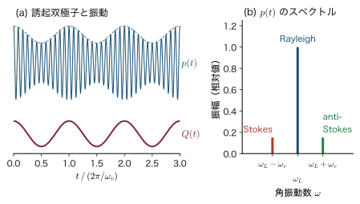
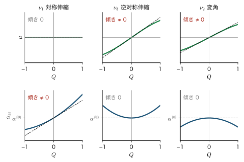
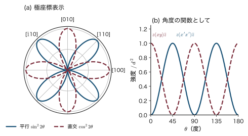
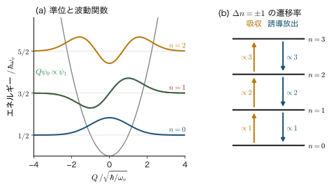
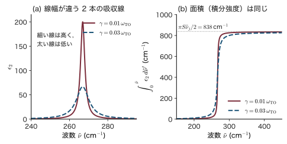
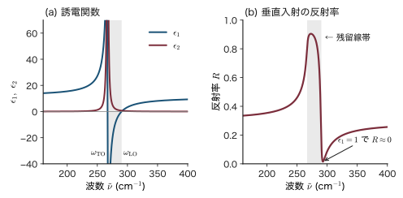
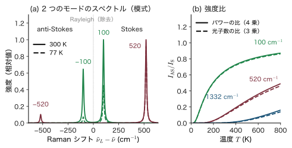
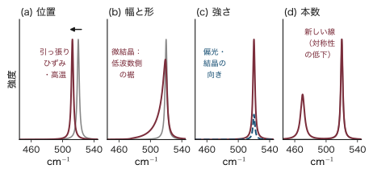

第34章赤外分光・Raman 分光 — 群論の選択則から量子論へ
新しい物質を合成したら，まず X 線回折で結晶構造を確かめ，次に Raman 分光や赤外分光で「振動のスペクトル」を測る．どちらも数分で測れて，試料を壊さない．スペクトルには何本かのピークが並び，その本数，位置，幅，偏光による強弱が，結晶の対称性，結合の強さ，結晶性，ひずみ，温度，相転移を語っている．ところが，ピークの帰属（どのピークがどの振動か）を自分で付けようとすると，「なぜこの振動は Raman には見えて赤外には見えないのか」「なぜ立方晶の SrTiO3 には 1 次の Raman 線が 1 本も無いのか」という問いに，すぐ突き当たる．
本章はこの問いに 2 段構えで答える．第一段は 群論による解析 である．第10章 10.6〜10.7 節では，分子の基準振動を既約分解し，指標表の右の列（$x,y,z$ と 2 次式）を見て赤外活性・Raman 活性を判定した．本章ではこの手順を復習したうえで（34.3 節），結晶のフォノン（単位胞の原子の変位を結晶の点群で分解する「因子群解析」）へ広げ，ダイヤモンド，岩塩，閃亜鉛鉱，ウルツ鉱，ルチル，ペロブスカイトの光学モードを自分で数えて分類する（34.4 節）．さらに，散乱光の偏光まで予言する Raman テンソルを導入する（34.5 節）．
第二段は 量子論 である．群論は「行列要素が 0 か 0 でないか」を教えてくれるが，なぜその行列要素が問題になるのかは教えてくれない．34.6 節では，光と振動の相互作用を Fermi の黄金律で扱い，調和振動子の行列要素 $\bra{n+1}Q\ket{n}=\sqrt{(n+1)\hbar/2\omega}$ から選択則 $\Delta n=\pm1$ と「双極子モーメントが振動で変わること」という赤外活性の条件を導く．34.7 節では，Raman 散乱を「光子を 1 個吸収して別の光子を 1 個放出する 2 光子過程」として 2 次の摂動論で書き，仮想的な中間状態を経由する Kramers–Heisenberg–Dirac（クラマース・ハイゼンベルク・ディラック）の式から，「分極率が振動で変わること」という Raman 活性の条件と，Stokes 線と anti-Stokes 線の強度比を導く．こうして，第10章で覚えた判定規則（$x,y,z$ と同じ表現なら赤外活性，2 次式と同じ表現なら Raman 活性）が，どの行列要素から来たのかが分かる．
前後の章とのつながりを述べておく．Raman 散乱の古典論（分極率の変調）と強度比は，非線形光学の文脈で第26章 26.6 節が導いている．本章はそれを分光法として使えるところまで進める．赤外活性な極性フォノンが LO と TO に分かれる話は第32章，誘電関数の Lorentz 型と残留線帯は第32章 32.4 節と第33章 33.1 節，フォノンの寿命と温度変化は第30章が扱う．本章の最後（34.8 節）では，これらをまとめて「スペクトルから何が分かるか」を整理し，第一原理計算（フォノンの振動数と既約表現，Born 有効電荷，Raman 強度）と実験を突き合わせるときの考え方を述べる．
- 赤外分光（光の吸収）と Raman 分光（光の非弾性散乱）が何を測っているか．波数 $\mathrm{cm^{-1}}$ と meV・THz・K の換算，Rayleigh 線・Stokes 線・anti-Stokes 線
- 光の波数が Brillouin 域に比べて桁違いに小さいので，1 次の過程では $\qq\approx0$（$\Gamma$ 点）のフォノンだけが見えること
- 古典論の条件：赤外活性は $\partial\bm\mu/\partial Q\neq0$，Raman 活性は $\partial\alpha/\partial Q\neq0$．CO2 の 3 つの振動での絵解きと相互排除則
- 分子の基準振動の既約分解（H2O，CO2，CH4，BF3）と活性の判定
- 結晶の $\Gamma$ 点フォノンの因子群解析：力学的表現 $\Gamma_{\rm mech}$，音響モード，赤外活性・Raman 活性・サイレントの分類（6 種の結晶で勘定する）
- 対称性が下がると Raman 線が現れること（立方晶 SrTiO3 と正方晶 BaTiO3）＝相転移の検出
- Raman テンソルと偏光選択則，Porto 記法，Si(001) の後方散乱の角度依存 $\sin^22\theta$・$\cos^22\theta$
- 量子論の赤外活性：Fermi の黄金律，$\bra{n+1}Q\ket{n}$，選択則 $\Delta n=\pm1$，正味の吸収が温度によらないこと，モード有効電荷と誘電関数
- 量子論の Raman 活性：2 光子過程，仮想的な中間状態，Placzek の分極率近似，強度比 $I_{\rm AS}/I_{\rm S}$ と $\omega^4$ 則，結晶での 3 頂点の過程，共鳴 Raman と 2 次の Raman
- スペクトルのピーク位置・線幅・強度・偏光・本数から物性を読む方法と，第一原理計算との突き合わせ方
34.1 2 つの振動分光法 — 何を測っているのか
振動分光（vibrational spectroscopy）とは，分子や結晶の原子の振動を光で調べる方法の総称である．よく使われる方法は 2 つある．赤外分光（infrared spectroscopy，IR）は，振動と同じ振動数の光が吸収されることを使う．Raman（ラマン）分光は，可視光のレーザーを当てたとき，散乱光の中に振動のぶんだけ振動数のずれた光が混じることを使う．同じ振動を見ているのに，見える振動と見えない振動が 2 つの方法で違う．その理由を理解するのが本章の目標である．まず，2 つの方法が実際に何を測っているのかを，装置と準位図で確かめよう．
記号の約束：本章で使う記号
- 振動（分子の基準振動，結晶の $\Gamma$ 点の光学フォノン）の角振動数を $\omega_v$ と書く（第26章 26.6 節の $\Omega$ と同じ．結晶のモードを区別するときは $\omega_j$）．レーザー光は $\omega_L$，Stokes 光と anti-Stokes 光は $\omega_{\rm S}=\omega_L-\omega_v$，$\omega_{\rm AS}=\omega_L+\omega_v$（添字は大文字）．Stokes か anti-Stokes かを区別しない一般の散乱光の角振動数は，添字を小文字にして $\omega_{\rm s}$ と書く（34.7 節）．
- 波数 $\tilde\nu=1/\lambda=\omega/(2\pi c)$（単位 $\mathrm{cm^{-1}}$）．Raman シフトは $\tilde\nu_v=\omega_v/(2\pi c)$．
- $Q$ は質量で重み付けした基準座標（単位 $\mathrm{kg^{1/2}\,m}$）で，1 つのモードのハミルトニアンは $\Ham=\tfrac12P^2+\tfrac12\omega_v^2Q^2$（第27章 27.4.1 項で $M=1$ としたもの）．振動の量子数は $n$，熱平均は $\bar n=1/(\ee^{\hbar\omega_v/k_BT}-1)$，屈折率は第33章と同じく $n_r$．
- $\bm\mu$ は分子（または単位胞）の双極子モーメント，$\alpha$（成分 $\alpha_{\rho\sigma}$）は分極率（第26章 26.6 節と同じ）．吸収係数は $\alpha_{\rm abs}$ と書いて区別する．
- $\Gamma$ は Brillouin 域の中心と表現（$\Gamma_{\rm vib}$，$\Gamma_{\rm mech}$）の両方に使う（第10・11章と同じ）．そのため線幅は第30章の $\Gamma$ ではなく減衰定数 $\gamma$ で表す．本章の $\gamma$ は角振動数の半値全幅で，第30章の $\Gamma$（角振動数の半値半幅）とは $\gamma=2\Gamma$ の関係にある．寿命（振動の量子が残っている時間）は $\tau=1/\gamma$（第30章の書き方では $\tau=1/(2\Gamma)$，同じもの）．第27章の表27.4 の $\gamma=\Gamma/\hbar$ は半値半幅なので，本章の $\gamma$ の半分にあたる．モードを区別するときは $\gamma_j$，34.7 節の電子の中間状態 $\ket r$ の幅は $\gamma_r$（これも半値全幅）と書く．
- Raman テンソルは $\mathcal{R}$（筆記体の R）と書く．第26章 26.6.3 項で $R$ と書いたものと同じである．34.3〜34.4 節の立体でない $R$ は対称操作，34.6 節の $R$ は反射率である．
- $\Omega$ は 34.6.5 項では単位胞の体積（第32章と同じ）に使う．第26章で振動の角振動数に使った $\Omega$ は，本章では $\omega_v$ と書くので衝突しない．
- 振動子の鋭さを表す「Q 値」（quality factor，品質係数）は，基準座標 $Q$ と同じ文字なので，本章では「品質係数 Q 値」と言葉で書き，式には使わない．
34.1.1 赤外分光 — 振動と同じ振動数の光を吸収する
原子が振動すると，分子や単位胞の中の正負の電荷の位置がずれ，電気双極子モーメントが振動する場合がある．振動する双極子は，同じ振動数の電磁波と結合する（アンテナと同じ）．そこに振動数 $\omega=\omega_v$ の赤外光を当てると，光のエネルギーが振動に移る．これが赤外吸収である．試料を透過した光の強さを波数の関数として測ると，吸収のある波数で谷ができる．結晶では吸収が強すぎて光が通らないことが多いので，反射率を測ることも多い（34.6.5 項）．
現在の赤外分光装置のほとんどは Fourier 変換赤外分光（FTIR）である（図34.1(a)）．白色の赤外光を Michelson（マイケルソン）干渉計に通し，片方の鏡を動かしながら検出器の信号を記録して Fourier 変換すると，全波数のスペクトルが一度に得られる．測定範囲はおおむね $400$〜$4000\,\mathrm{cm^{-1}}$（中赤外）で，検出器などを替えれば $10$〜$400\,\mathrm{cm^{-1}}$（遠赤外，テラヘルツ）も測れる．
34.1.2 Raman 分光 — 可視光の非弾性散乱
可視光（波長 $400$〜$800\,\mathrm{nm}$，波数 $12500$〜$25000\,\mathrm{cm^{-1}}$）の振動数は，原子の振動よりずっと高い．この光を物質に当てると，光の電場が電子を揺すり，揺すられた電子が同じ振動数の光を四方へ放射する．これが Rayleigh（レイリー）散乱である．ところが，電子の揺すられやすさ（分極率）が原子の振動とともに変わると，散乱光は振動数 $\omega_v$ で「変調」され，入射光の振動数 $\omega_L$ の両側に $\omega_L-\omega_v$ と $\omega_L+\omega_v$ の成分が現れる（34.2 節で導く）．低い側を Stokes（ストークス）線，高い側を anti-Stokes（アンチストークス）線という．これが Raman 散乱である．散乱光のスペクトルを，入射光からの振動数のずれ（Raman シフト）$\tilde\nu_L-\tilde\nu$ の関数として描いたものが Raman スペクトルである．
Raman 散乱は弱く，Rayleigh 散乱光の $10^{-6}$ 程度以下しかない．そこで Raman 分光器（図34.1(b)）は，(i) 単色で強いレーザー（$532$，$633$，$785\,\mathrm{nm}$ など），(ii) レーザーと同じ波長の光だけを鋭く遮る ノッチフィルター（またはエッジフィルター），(iii) 回折格子の分光器，(iv) 冷却した CCD 検出器からなる．顕微鏡の対物レンズでレーザーを $1\,\mu\mathrm{m}$ 程度に絞り，同じレンズで後ろに戻る散乱光を集める 後方散乱（backscattering）の配置が標準である．
34.1.3 エネルギー準位図で見る — 吸収と散乱の違い
図34.2 は，2 つの方法で起こることをエネルギーの出入りで描いたものである．横線は振動の準位（量子数 $n=0,1$）で，間隔は $\hbar\omega_v$ である．上の灰色の帯は電子の励起状態（分子なら電子励起，半導体なら伝導帯）を表す．
- (a) 赤外吸収：エネルギー $\hbar\omega=\hbar\omega_v$ の赤外光子 1 個が吸収され，振動が $n=0$ から $n=1$ に上がる．光子のエネルギーと振動のエネルギーが一致しなければ起こらない（共鳴）．
- (b) Rayleigh 散乱：可視光子（$\hbar\omega_L$）が来て，同じエネルギーの光子が出ていく．振動の状態は変わらない．
- (c) Stokes 散乱：出ていく光子のエネルギーが $\hbar\omega_v$ だけ小さく，振動が 1 段上がる（フォノンが 1 個できる）．
- (d) anti-Stokes 散乱：もともと励起されていた振動（$n=1$）が 1 段下がり，出ていく光子のエネルギーが $\hbar\omega_v$ だけ大きい（フォノンが 1 個消える）．熱で励起された振動が要るので，低温ほど弱い．
(b)〜(d) の上向きの矢印が届く先の破線は，実在の準位ではない．入射光子のエネルギーは電子の励起エネルギーに足りないので，系は電子の励起状態に「本当に」移ることはできない．それでも，光の電場は電子を揺すり，ごく短い時間だけ電子の励起状態の成分が混じる．その状態を便宜的に描いたのが 仮想準位（virtual level）である．意味は 34.7 節で 2 次の摂動論として正確に述べる．比較のために (e) に示した蛍光（発光）は，光子が実在の電子準位に吸収され，緩和したあとで別の光子が出る過程で，散乱とは別物である．Raman 散乱は吸収と放出が「同時に」起こる 1 つの過程であり，蛍光のような時間の遅れを伴わない．
34.1.4 波数で表す習慣と，振動のエネルギーの相場
振動分光では，振動数をエネルギーではなく 波数 $\tilde\nu$（単位 $\mathrm{cm^{-1}}$，「カイザー」と呼ぶ人もいる）で表す．波数は波長の逆数 $\tilde\nu=1/\lambda$ で，光子のエネルギーとは $E=hc\tilde\nu$ でつながる．換算の係数を順に求めておく．$\tilde\nu=1\,\mathrm{cm^{-1}}=100\,\mathrm{m^{-1}}$ のとき
$$ \begin{aligned} E&=hc\tilde\nu=(1239.84\,\mathrm{eV\,nm})\times(100\,\mathrm{m^{-1}})=1239.84\times10^{-9}\times100\,\mathrm{eV}\\ &=1.2398\times10^{-4}\,\mathrm{eV}=0.12398\,\mathrm{meV},\\ \nu&=c\tilde\nu=(2.9979\times10^{8}\,\mathrm{m/s})\times(100\,\mathrm{m^{-1}})=2.9979\times10^{10}\,\mathrm{Hz}=29.979\,\mathrm{GHz},\\ E/k_B&=\frac{1.2398\times10^{-4}\,\mathrm{eV}}{8.6173\times10^{-5}\,\mathrm{eV/K}}=1.4388\,\mathrm{K}. \end{aligned} $$逆に $1\,\mathrm{meV}=8.0655\,\mathrm{cm^{-1}}$ である．以下の換算表を手元に置いておくと便利である．
| 振動 | 波数 $\tilde\nu_v$ ($\mathrm{cm^{-1}}$) | エネルギー (meV) | 測る方法 |
|---|---|---|---|
| O–H，C–H，N–H の伸縮（軽い H が動く） | 2800〜3700 | 350〜460 | 赤外・Raman |
| C=O，C=C の伸縮（2 重結合） | 1600〜1800 | 200〜220 | 赤外・Raman |
| 分子の変角，C–C の伸縮 | 500〜1500 | 60〜190 | 赤外・Raman |
| ダイヤモンドの光学フォノン（軽く硬い） | 1332 | 165 | Raman |
| Si の光学フォノン | 520 | 64.5 | Raman |
| GaAs の TO・LO フォノン | 268・292 | 33・36 | 赤外・Raman |
| NaCl の TO フォノン | 164 | 20 | 赤外（遠赤外） |
| 重い原子の結晶の低い光学フォノン，ソフトモード | 10〜100 | 1〜12 | 低波数 Raman，テラヘルツ |
分子の伸縮振動はおおむね $1000$〜$4000\,\mathrm{cm^{-1}}$，結晶のフォノンはおおむね $50$〜$1500\,\mathrm{cm^{-1}}$ にある．水素が動く振動が高いのは，振動数が $\omega=\sqrt{K/M_r}$（$K$ はばね定数，$M_r$ は換算質量）で，$M_r$ が小さいからである．室温の熱エネルギー $k_BT=25.85\,\mathrm{meV}$ は $208\,\mathrm{cm^{-1}}$ に当たるので，これより高い振動は室温でほとんど励起されていない．この事実は 34.7 節で anti-Stokes 線の弱さとして現れる．
例題34.1 波数の換算
(1) Si の Raman 線 $520\,\mathrm{cm^{-1}}$ を meV，THz，K に換算せよ．(2) CO2 の変角振動 $667\,\mathrm{cm^{-1}}$ を吸収する赤外光の波長はいくらか．(3) $532\,\mathrm{nm}$ のレーザーで Si を測るとき，Stokes 光の波長を求めよ．
解答．(1) 式 \eqref{eq:34-convert} を掛ける．
$$ \begin{aligned} E&=520\times0.12398\,\mathrm{meV}=64.47\,\mathrm{meV},\\ \nu&=520\times29.979\,\mathrm{GHz}=15589\,\mathrm{GHz}=15.59\,\mathrm{THz},\\ E/k_B&=520\times1.4388\,\mathrm{K}=748.2\,\mathrm{K}. \end{aligned} $$(2) 波長は波数の逆数なので
$$ \lambda=\frac1{\tilde\nu}=\frac{1}{667\,\mathrm{cm^{-1}}}=1.499\times10^{-3}\,\mathrm{cm}=15.0\,\mu\mathrm{m} $$(3) レーザーの波数は $\tilde\nu_L=1/(532\times10^{-7}\,\mathrm{cm})=18797\,\mathrm{cm^{-1}}$．Stokes 光は $\tilde\nu_{\rm S}=18797-520=18277\,\mathrm{cm^{-1}}$ なので
$$ \lambda_{\rm S}=\frac{1}{18277\,\mathrm{cm^{-1}}}=5.4714\times10^{-5}\,\mathrm{cm}=547.1\,\mathrm{nm} $$∎
Si の光学フォノンのエネルギー $64.5\,\mathrm{meV}$ は室温の $k_BT$ の約 2.5 倍で，温度に直すと約 $750\,\mathrm{K}$ である．また，Raman 光は波長でいえばレーザーから $15\,\mathrm{nm}$ しか離れていない．だからノッチフィルターの切れ味が大切になる．
34.1.5 光の波数は小さい — 1 次の過程では $\Gamma$ 点のフォノンだけが見える
結晶の振動は波数 $\qq$ をもつフォノンである（第13章）．光とフォノンのやりとりでは，エネルギーとともに結晶運動量が保存する（第11章 11.3 節，第13章 13.9 節）．フォノン 1 個が関わる 1 次の過程（first-order process）では
$$ \text{赤外吸収：}\ \ \qq=\kk_{\rm 光},\qquad \text{Raman（Stokes）：}\ \ \kk_L=\kk_{\rm S}+\qq\ \ \Longrightarrow\ \ \qq=\kk_L-\kk_{\rm S} $$である（逆格子ベクトルの分は 1 次の過程では効かない）．Raman で $\abs{\qq}$ が最大になるのは，散乱光が入射光と逆向きに出る後方散乱で，$\abs{\kk_{\rm S}}\approx\abs{\kk_L}$ だから $q_{\max}\approx2k_L=2\times2\pi n_r/\lambda$ である．Brillouin 域の大きさ（$\Gamma$ 点から端までの距離 $\sim2\pi/a$）と比べてみよう．
例題34.2 光の波数と $\Gamma$ 点
Si（格子定数 $a=0.5431\,\mathrm{nm}$，$532\,\mathrm{nm}$ での屈折率 $n_r\approx4.15$）を $532\,\mathrm{nm}$ のレーザーで後方散乱の配置で測る．(1) Raman 散乱でフォノンに渡せる波数の最大値 $q_{\max}$ を求め，$\Gamma$ 点から X 点までの距離 $2\pi/a$ と比べよ．(2) 赤外光（$520\,\mathrm{cm^{-1}}$）ではどうか．
解答．(1) Si の中の光の波数は
$$ k_L=\frac{2\pi n_r}{\lambda}=\frac{2\pi\times4.15}{532\times10^{-9}\,\mathrm{m}}=4.90\times10^{7}\,\mathrm{m^{-1}} $$なので $q_{\max}=2k_L=9.80\times10^{7}\,\mathrm{m^{-1}}$．一方
$$ \frac{2\pi}{a}=\frac{2\pi}{0.5431\times10^{-9}\,\mathrm{m}}=1.157\times10^{10}\,\mathrm{m^{-1}} $$で，比は
$$ \frac{q_{\max}}{2\pi/a}=\frac{9.80\times10^{7}}{1.157\times10^{10}}=8.5\times10^{-3} $$すなわち $0.85\,\%$ にすぎない．
(2) 赤外光の真空中の波数は
$$ k=2\pi\tilde\nu=2\pi\times(520\times100\,\mathrm{m^{-1}})=3.27\times10^{5}\,\mathrm{m^{-1}} $$で，$2\pi/a$ の $3\times10^{-5}$ 倍である（結晶の中で屈折率 $3.4$ 程度を掛けても $10^{-4}$ 倍）．∎
どちらも Brillouin 域の中心のごく近く（図34.3 の緑の幅）しか見ていない．この範囲では光学フォノンの振動数はほとんど変わらないので，1 次の赤外吸収・Raman 散乱で見えるのは $\qq\approx0$（$\Gamma$ 点）のフォノンだけと考えてよい．これが，34.4 節で $\Gamma$ 点のフォノンだけを群論で分類すればよい理由である．中性子散乱（第13章 13.9 節）が分散関係の全体を測れるのとは対照的である．なお，第32章 32.1 節では光の波数を「Brillouin 域の約 1/1000」と見積もっている．あちらは真空中の光の波数 $k=2\pi/\lambda$ そのものを比べた値で，ここでは結晶の中の波数（屈折率 $n_r\approx4$ 倍）と後方散乱の 2 倍を掛けたので約 1 % になった．どちらで見積もっても「Brillouin 域に比べて桁違いに小さい」という結論は同じである．
34.1.6 歴史を少し
光が散乱されるときに振動数がずれることは，1923 年に Smekal（スメカル）が量子論から予言していた．1928 年，インドの Raman と Krishnan（クリシュナン）は，単色にした太陽光を液体に当て，散乱光の中に入射光と違う色の弱い光を見つけた．ほぼ同じ時期に，ソ連の Landsberg（ランズベルク）と Mandelstam（マンデリシュターム）も石英の結晶で同じ現象を見つけている．Raman はこの発見で 1930 年の Nobel 物理学賞を受けた．1960 年代のレーザーの登場と，その後の検出器・フィルターの進歩で，いまでは数秒で測れる日常の道具になった．
34.2 古典論 — 双極子モーメントの変化と分極率の変化
量子論に入る前に，古典力学と古典電磁気学だけで「どの振動が見えるか」を考える．結論を先に言うと，赤外では振動にともなう双極子モーメントの変化が，Raman では振動にともなう分極率の変化が問題になる．この 2 つの量は空間の対称操作に対して変換の仕方が違う（双極子はベクトル，分極率は 2 階のテンソル）．だから，同じ振動でも見え方が違う．
34.2.1 赤外活性の条件 — 振動が双極子モーメントを揺らすか
分子（または結晶の単位胞）の電気双極子モーメント $\bm\mu$ は，原子の配置で決まる．1 つの基準振動の座標 $Q$ だけを動かしたとき，$\bm\mu$ を $Q=0$（つり合いの位置）のまわりで Taylor 展開すると
である．$\bm\mu_0$ は永久双極子（H2O にはあり，CO2 には無い）．振動 $Q(t)=Q_0\cos\omega_vt$ が起こると，第 2 項によって双極子が振動数 $\omega_v$ で振動する：
$$ \bm\mu(t)=\bm\mu_0+\left(\frac{\partial\bm\mu}{\partial Q}\right)_0Q_0\cos\omega_vt+\cdots $$振動する双極子は振動数 $\omega_v$ の電磁波を放射し，逆に同じ振動数の電磁波から仕事をされる．光の電場 $\EE(t)=\EE_0\cos\omega t$ が双極子にする仕事の率（パワー）は，双極子のエネルギー $-\bm\mu\cdot\EE$ から $Q$ に働く力が $F_Q=-\partial(-\bm\mu\cdot\EE)/\partial Q=(\partial\bm\mu/\partial Q)_0\cdot\EE$ であることを使って，$F_Q\dot Q$ の時間平均で表される．$\omega=\omega_v$ のとき（共鳴），$F_Q$ は振動を同じ位相で押し続け，エネルギーが光から振動へ移る．これが赤外吸収の古典的な姿である（減衰振動子の共鳴そのもの．34.6.5 項）．
永久双極子 $\bm\mu_0$ があるかどうかは関係ない．問われているのは振動によって双極子が変わるかである．
34.2.2 Raman 活性の条件 — 振動が分極率を揺らすか
可視光の電場 $\EE$ は電子を揺すり，誘起双極子を作る：
$$ p_\rho=\sum_\sigma\alpha_{\rho\sigma}\mathcal{E}_\sigma\qquad(\rho,\sigma=x,y,z) $$$\alpha_{\rho\sigma}$ は分極率テンソルで，対称（$\alpha_{\rho\sigma}=\alpha_{\sigma\rho}$）である．テンソルなのは，電子雲の揺すられやすさが方向によって違い，$x$ 方向の電場が $y$ 方向の双極子を作ることもあるからである．分極率も原子の配置に依存するので
と展開できる．第26章 26.6.1 項と同じ計算（式を再掲する）で，$Q(t)=Q_0\cos\omega_vt$，$\mathcal{E}(t)=\mathcal{E}_0\cos\omega_Lt$ を $p=\alpha\mathcal{E}$ に入れ，積和の公式 $\cos A\cos B=\tfrac12[\cos(A-B)+\cos(A+B)]$ を使うと
が得られる（テンソルの添字は省いた）．誘起双極子は，搬送波 $\omega_L$ が振動 $\omega_v$ で振幅変調（AM）されたものになり，スペクトルには $\omega_L$ と $\omega_L\pm\omega_v$ の 3 本が立つ（図34.4）．側帯波の振幅は $(\partial\alpha/\partial Q)_0$ に比例するので

補足：分極率楕円体の描き方
対称テンソル $\alpha_{\rho\sigma}$ は，適当な直交軸（主軸）をとれば対角になる．主軸方向の分極率を $\alpha_1,\alpha_2,\alpha_3$ とすると，分極率は「主軸の向きと 3 つの長さ」をもつ楕円体で表せる．本章の図では，半軸の長さを $\alpha_1,\alpha_2,\alpha_3$ に比例させて描く（電子雲の揺すられやすさの絵．大きいほど揺すられやすい）．文献では，曲面 $\sum_{\rho\sigma}\alpha_{\rho\sigma}x_\rho x_\sigma=1$ を 分極率楕円体と呼び，半軸の長さを $1/\sqrt{\alpha_i}$ にとる流儀が多い．その場合は大小が逆に見えるが，Raman 活性の判定（楕円体の大きさ・形・向きのどれかが $Q$ の 1 次で変わるか）は同じである．
34.2.3 CO2 の 3 つの振動で絵解きする
直線分子 CO2（O=C=O）は 3 原子なので $3\times3-5=4$ 個の振動の自由度をもつ（第10章 例題10.12）．対称伸縮 $\nu_1$（$1388\,\mathrm{cm^{-1}}$），変角 $\nu_2$（$667\,\mathrm{cm^{-1}}$，紙面内と紙面に垂直の 2 重縮退），逆対称伸縮 $\nu_3$（$2349\,\mathrm{cm^{-1}}$）である．C はやや正（$\delta+$），O はやや負（$\delta-$）に帯電している．図34.5 は，それぞれの振動で $Q\lt0$，$Q=0$，$Q\gt0$ の瞬間の形と，双極子モーメント（緑の矢印）と分極率楕円体（薄い楕円）を描いたものである．
図34.5 を，$\bm\mu(Q)$ と $\alpha(Q)$ のグラフにしたのが図34.6 である．
- 対称伸縮 $\nu_1$：分子は伸びても縮んでも反転中心（C の位置）をもったままである．反転中心のある形では双極子は 0 でなければならない（反転で $\bm\mu\to-\bm\mu$ になるが，形は変わらないので $\bm\mu=-\bm\mu$）．だから $\bm\mu(Q)=0$ がすべての $Q$ で成り立ち，傾きも 0 である．一方，結合が伸びれば電子雲は広がって揺すられやすくなるので，$\alpha$ は $Q$ とともに増え，傾き $(\partial\alpha/\partial Q)_0$ は 0 でない．
- 逆対称伸縮 $\nu_3$：$Q$ の形を C の位置で反転すると，$-Q$ の形になる．双極子は反転で符号を変えるので $\bm\mu(-Q)=-\bm\mu(Q)$（奇関数）．$\bm\mu$ は $Q$ の 1 次で変わってよく，実際に変わる．分極率は反転で変わらない（$\bm p=\alpha\EE$ で $\bm p$ と $\EE$ がともに符号を変える）ので $\alpha(-Q)=\alpha(Q)$（偶関数）．偶関数の $Q=0$ での傾きは必ず 0 である．
- 変角 $\nu_2$：$Q$ の形を分子軸を含む鏡（または C の位置での反転）で映すと $-Q$ の形になる．同じ理由で $\bm\mu$ は奇関数，$\alpha$ は偶関数になる．

例題34.3 CO2 の活性を古典論で判定する
CO2 の 3 つの振動 $\nu_1$，$\nu_2$，$\nu_3$ のうち，赤外活性なもの，Raman 活性なものを，双極子と分極率の対称性だけから判定せよ．大気中の CO2 の赤外吸収に $1388\,\mathrm{cm^{-1}}$ の線が無いことを説明せよ．
解答．反転中心 C に関する反転を $\mathcal{I}$ と書く．$\mathcal{I}$ は双極子の符号を変え（$\bm\mu\to-\bm\mu$），分極率は変えない（$\alpha\to\alpha$）．
(i) $\nu_1$ では，$\mathcal{I}$ を施しても形が変わらない（$Q\to Q$）．したがって $\bm\mu(Q)=-\bm\mu(Q)$，すなわち $\bm\mu(Q)=0$ であり，$(\partial\bm\mu/\partial Q)_0=0$：赤外不活性．$\alpha(Q)=\alpha(Q)$ は何の制約にもならず，伸び縮みで分極率は変わるので Raman 活性．
(ii) $\nu_2$，$\nu_3$ では，$\mathcal{I}$ で $Q\to-Q$ になる．したがって $\bm\mu(-Q)=-\bm\mu(Q)$（奇関数）で 1 次の項が許され，C と O の電荷の重心がずれるので実際に 0 でない：赤外活性．$\alpha(-Q)=\alpha(Q)$（偶関数）を微分すると $-\alpha'(-Q)=\alpha'(Q)$，$Q=0$ で $\alpha'(0)=-\alpha'(0)$ だから $\alpha'(0)=0$：Raman 不活性．
$1388\,\mathrm{cm^{-1}}$ は $\nu_1$ なので，赤外吸収には現れない．∎ 大気の赤外吸収で効くのは $667\,\mathrm{cm^{-1}}$（$\nu_2$，波長 $15\,\mu\mathrm{m}$）と $2349\,\mathrm{cm^{-1}}$（$\nu_3$，$4.3\,\mu\mathrm{m}$）であり，温室効果に関わるのはこの 2 本である（第10章 10.7 節）．
34.2.4 相互排除則をパリティで理解する
例題34.3 の議論は，CO2 に限らず反転中心をもつすべての分子と結晶に使える．反転中心があると，すべての基準振動は反転に対して偶（$g$：$Q\to Q$）か奇（$u$：$Q\to-Q$）のどちらかに分かれる（第8章 8.9 節の Mulliken 記号の $g/u$）．すると
- $g$ のモード：$\bm\mu(Q)=-\bm\mu(Q)$ より $\bm\mu$ は変わらない（赤外不活性）．$\alpha$ は変わってよい（Raman 活性になりうる）．
- $u$ のモード：$\alpha(-Q)=\alpha(Q)$ より $(\partial\alpha/\partial Q)_0=0$（Raman 不活性）．$\bm\mu$ は変わってよい（赤外活性になりうる）．
つまり赤外活性と Raman 活性は両立しない．これが 相互排除則（rule of mutual exclusion）であり，第10章 10.7 節の定理10.4 を古典的な言葉で言い直したものである（第10章では「$x,y,z$ は $u$，2 次式は $g$」という指標表の性質で証明した）．どちらにも不活性なモード（サイレントモード）は，反転中心があってもなくても存在しうる．
反転中心が無い分子では，この制約が無い．H2O（折れ線形，点群 $C_{2v}$）の 3 つの振動，対称伸縮 $\nu_1$（$3657\,\mathrm{cm^{-1}}$），変角 $\nu_2$（$1595\,\mathrm{cm^{-1}}$），逆対称伸縮 $\nu_3$（$3756\,\mathrm{cm^{-1}}$）は，どれも双極子と分極率の両方を $Q$ の 1 次で変えるので，3 つとも赤外活性かつ Raman 活性である（34.3.2 項で群論で確かめる）．
例題34.4 同じ振動数の線が赤外と Raman の両方に現れたら
ある未知の結晶の赤外スペクトルと Raman スペクトルを測ったところ，$480\,\mathrm{cm^{-1}}$ に両方で線が現れた（線幅の範囲で一致）．この結晶について何が言えるか．逆に，赤外と Raman で線の位置がまったく重ならなかったら何が言えるか．
解答．同じ振動数の 1 本の線が両方に現れるのは，1 つのモードが赤外活性かつ Raman 活性であることを意味する．相互排除則の対偶をとると「赤外活性かつ Raman 活性なモードがあれば，反転中心は無い」．したがって，この結晶は反転中心をもたない（非中心対称）と結論できる．ただし，2 つの別のモードの振動数が偶然近い可能性は残るので，偏光依存性（34.5 節）や温度変化で同じモードかどうかを確かめる必要がある．
逆に，線が重ならないことは中心対称の証拠にはならない（反転中心が無くても，片方でしか強く見えないモードは多い）．∎ 非中心対称性は圧電性・第二高調波発生（第26章 26.1 節）の前提なので，このチェックは新物質の対称性の手がかりになる．
注意：古典論が教えないこと
古典論の式 \eqref{eq:34-sideband} では，Stokes 線と anti-Stokes 線の振幅が等しい．しかし実際には，室温の Si でも anti-Stokes 線は Stokes 線の約 1/10 しかなく，低温ではほとんど消える．また，赤外吸収の強さや，振動数が 2 倍の位置に弱く現れる「倍音」も古典論では説明しにくい．これらは振動のエネルギーの量子化（34.6〜34.7 節）で説明される．
34.3 群論による解析 I — 分子の基準振動
34.2 節の古典的な判定は，CO2 のように振動の形が絵で分かるときには使いやすい．しかし原子が 5 個，10 個と増えると，振動の形を思い浮かべること自体が難しい．群論を使えば，振動の形を知らなくても，何本の振動があり，どれが赤外・Raman で見えるかを，指標表の計算だけで決められる．手順は第10章 10.6〜10.7 節で学んだので，ここでは要点を復習し，第10章で扱わなかった分子も含めて 4 つの例を勘定する．
34.3.1 手順の復習
手順：分子の振動を分類し，活性を判定する
- 点群を決める．分子の形からすべての対称操作を数え，点群（第4章）を決める．
- 全変位の表現 $\Gamma_{3N}$ の指標を求める．$N$ 原子の $3N$ 個の変位が張る表現の指標は，次の公式で与えられる（第10章 10.6.1 項）：操作 $R$ で動かない原子の数 $N_R$ に，1 原子あたりの寄与 $\Tr R=\pm1+2\cos\theta$（真の回転は $+$，鏡映・反転などの非真回転は $-$，$\theta$ は回転角）を掛ける． $$\chi_{3N}(R)=N_R\,(\pm1+2\cos\theta)$$
- 既約分解する．既約分解の公式（第8章 8.8 節）$a(\Gamma_i)=\dfrac1h\sum_R\chi^{(i)}(R)^*\chi_{3N}(R)$ を使う（$h$ は群の位数．同じ類の操作はまとめて，類の要素数を掛ける）．
- 並進と回転を引く．並進 $\Gamma_{\rm trans}$ は $x,y,z$ と同じ表現，回転 $\Gamma_{\rm rot}$ は $R_x,R_y,R_z$ と同じ表現（指標表の右の列）．残りが振動 $\Gamma_{\rm vib}$ で，次元は非直線分子で $3N-6$，直線分子で $3N-5$．
- 活性を判定する．指標表の右の列を見る．$\Gamma_{\rm vib}$ の成分が $x,y,z$ のどれかと同じ既約表現なら赤外活性，2 次式 $x^2,y^2,z^2,xy,yz,zx$（またはその 1 次結合）のどれかと同じ既約表現なら Raman 活性，どちらでもなければサイレント（第10章 10.7.1 項の判定）．
手順 2 の公式の意味は第10章 10.6.1 項で導いた．原子 $A$ が $R$ で別の原子に移るなら，その原子の変位は表現行列の非対角のブロックに入り，対角和（指標）には寄与しない．動かない原子だけが，自分の変位ベクトルを $R$ で回した分（$3\times3$ の回転行列の対角和）だけ寄与する．手順 5 の理由（なぜ $x,y,z$ と 2 次式なのか）は，34.6・34.7 節で量子論の行列要素から導く．ここではまず，判定規則として使う．
数学の道具：群論で活性を判定する 4 つの手順（本章だけで追えるように）
上の手順を，計算の作業だけに絞ってもう一度まとめる．使う道具はどれも第8〜10章で学んだもので，括弧の中に復習する場所を示した．
- 対称操作で動かない原子を数える．点群の各類から操作を 1 つ選び，その操作で自分自身の位置に戻る原子の数 $N_R$ を数える（結晶では格子並進の違いは問わない．34.4 節）．
- 可約表現の指標を作る．$\chi(R)=N_R\,(\pm1+2\cos\theta)$．$\pm1+2\cos\theta$ は 1 つの原子の 3 つの変位 $(x,y,z)$ を回した行列の対角和で，真の回転は $+$，鏡映・反転・回映は $-$（第10章 10.6 節の表10.4）．
- 既約分解する．指標表（第8章 8.5〜8.7 節で作り方，8.9 節で Mulliken 記号）の各行と $\chi$ を，類の要素数を掛けて掛け合わせ，位数 $h$ で割る：$a(\Gamma_i)=\frac1h\sum_R\chi^{(i)}(R)^*\chi(R)$（第8章 8.8 節）．結果の次元の和が $3N$（結晶では $3s$）になることで検算する．
- $x,y,z$ と 2 次式の基底から活性を読む．指標表の右の 2 列（第9章 9.7 節）に，各既約表現に属する 1 次式（$x,y,z$）と 2 次式（$x^2,xy,\dots$）が書いてある．並進（と分子では回転）を引いた残りの既約表現が，1 次式の列にあれば赤外活性，2 次式の列にあれば Raman 活性，どちらにも無ければサイレントである．この規則は直積の選択則（第10章 10.4 節の定理10.3）から来る（34.6.4 項，34.7.2 項で導く）．
振動の形そのもの（どの原子がどちら向きに動くか）が知りたいときは，射影演算子（第9章 9.3 節）を原子の変位に作用させて，各既約表現に属する変位の組（対称座標）を作る．本章の図34.7 や図34.12 の矢印は，そうして得られる形を描いたものである．
なぜ：反転中心があると赤外と Raman が排他的になるのか（相互排除則）
反転 $i$ は $(x,y,z)\to(-x,-y,-z)$ である．1 次式 $x,y,z$ は符号を変える（奇，$u$）．2 次式 $x^2,xy,\dots$ は 2 つの符号が打ち消して変わらない（偶，$g$）．したがって反転を含む点群では，$x,y,z$ の属する既約表現はすべて $u$，2 次式の属する既約表現はすべて $g$ で，両方の列に同時に現れる既約表現は無い．1 つのモードが赤外活性（1 次式の列）であり，かつ Raman 活性（2 次式の列）であることはできない．
物理の言葉で言い直すと，赤外で問題になる双極子 $\bm\mu$ は「位置 × 電荷」でできたベクトルなので反転で符号を変える（奇）．Raman で問題になる分極率 $\alpha_{\rho\sigma}$ は「双極子 ÷ 電場」で，分子も分母も符号を変えるので反転で変わらない（偶）．反転に対して偶（$g$）の振動は奇の量 $\bm\mu$ を 1 次で変えられず，奇（$u$）の振動は偶の量 $\alpha$ を 1 次で変えられない（34.2.4 項）．これが第10章 10.7 節の定理10.4 の中身である．
記号の約束：Mulliken 記号と $T$／$F$
既約表現の名前は Mulliken 記号（第8章 8.9 節）で書く：1 次元は $A$，$B$，2 次元は $E$，3 次元は $T$．3 次元の表現を，分光学の文献（特に分子振動の古典的な教科書）では $F$ と書くことが多い．$T_2$ と $F_2$，$T_{2g}$ と $F_{2g}$ は同じものである．本書は $T$ を使う．また，記号 $E$ は恒等操作（指標表の列）と 2 次元表現（行）の 2 つの意味で使われる（第8章 8.9 節の注意）．
34.3.2 H2O（$C_{2v}$）— 3 つとも両方で活性
第10章 例題10.9 で完全に勘定した．座標の約束も第10章と同じにする：$C_2$ 軸を $z$ 軸，分子を $xz$ 面内に置く．操作 $E$，$C_2(z)$，$\sigma_v(xz)$，$\sigma_v'(yz)$ で動かない原子は 3，1，3，1 個，$\Tr R$ は $3,-1,1,1$ なので
$$ \chi_{3N}=(3\cdot3,\ 1\cdot(-1),\ 3\cdot1,\ 1\cdot1)=(9,\,-1,\,3,\,1) $$既約分解すると $\Gamma_{3N}=3A_1\oplus A_2\oplus3B_1\oplus2B_2$．並進 $A_1(z)\oplus B_1(x)\oplus B_2(y)$ と回転 $A_2(R_z)\oplus B_1(R_y)\oplus B_2(R_x)$ を引いて
$$ \Gamma_{\rm vib}(\mathrm{H_2O})=2A_1\oplus B_1 $$である（分子を $yz$ 面に置く流儀では $2A_1\oplus B_2$ になる．第10章の注意）．$C_{2v}$ の指標表（第10章 表10.5）の右の列では，$A_1$ に $z$ と $x^2,y^2,z^2$，$B_1$ に $x$ と $xz$ がある．したがって
- $\nu_1$（対称伸縮，$A_1$，$3657\,\mathrm{cm^{-1}}$）と $\nu_2$（変角，$A_1$，$1595\,\mathrm{cm^{-1}}$）：赤外活性（双極子は $z$ 方向，つまり $C_2$ 軸に沿って変わる）かつ Raman 活性．
- $\nu_3$（逆対称伸縮，$B_1$，$3756\,\mathrm{cm^{-1}}$）：赤外活性（双極子は $x$ 方向，分子面内で $C_2$ 軸に垂直に変わる）かつ Raman 活性（$\alpha_{xz}$ が変わる）．
群論は活性だけでなく，双極子がどの方向に揺れるかも教える．$A_1$ のモードでは $z$ 成分だけ，$B_1$ のモードでは $x$ 成分だけが変わる．これは図34.7(a) の矢印で確かめられる．液体の水の赤外スペクトルは水素結合で大きく広がるが，気体の水蒸気では 3 本とも観測される．
34.3.3 CO2（$D_{\infty h}$）— 部分群に落として数える
直線分子の点群 $D_{\infty h}$ は，分子軸まわりの任意の角度 $\phi$ の回転を含む無限群である．既約分解の公式の和は積分になり，手で計算するのは面倒である．そこで実用上は，$D_{\infty h}$ の有限の部分群 $D_{2h}$（分子軸を $z$ 軸とし，$x$，$y$，$z$ の 3 本の 2 回軸と反転をもつ群，位数 8）に落として数え，最後に $D_{\infty h}$ の名前に戻す．
例題34.5 CO2 の振動を $D_{2h}$ で数える
CO2（分子軸を $z$，C を原点）の $\Gamma_{3N}$ を $D_{2h}$ で既約分解し，振動の既約表現を求めよ．$D_{\infty h}$ の既約表現は $D_{2h}$ に落とすと $\sigma_g^+\to A_g$，$\sigma_u^+\to B_{1u}$，$\pi_g\to B_{2g}\oplus B_{3g}$，$\pi_u\to B_{2u}\oplus B_{3u}$ になる．
解答．$D_{2h}$ の指標表は次のとおりである（各類の要素は 1 個）．
| $D_{2h}$ | $E$ | $C_2(z)$ | $C_2(y)$ | $C_2(x)$ | $i$ | $\sigma(xy)$ | $\sigma(xz)$ | $\sigma(yz)$ | 1 次 | 2 次 |
|---|---|---|---|---|---|---|---|---|---|---|
| $A_g$ | 1 | 1 | 1 | 1 | 1 | 1 | 1 | 1 | $x^2,y^2,z^2$ | |
| $B_{1g}$ | 1 | 1 | $-1$ | $-1$ | 1 | 1 | $-1$ | $-1$ | $R_z$ | $xy$ |
| $B_{2g}$ | 1 | $-1$ | 1 | $-1$ | 1 | $-1$ | 1 | $-1$ | $R_y$ | $xz$ |
| $B_{3g}$ | 1 | $-1$ | $-1$ | 1 | 1 | $-1$ | $-1$ | 1 | $R_x$ | $yz$ |
| $A_u$ | 1 | 1 | 1 | 1 | $-1$ | $-1$ | $-1$ | $-1$ | ||
| $B_{1u}$ | 1 | 1 | $-1$ | $-1$ | $-1$ | $-1$ | 1 | 1 | $z$ | |
| $B_{2u}$ | 1 | $-1$ | 1 | $-1$ | $-1$ | 1 | $-1$ | 1 | $y$ | |
| $B_{3u}$ | 1 | $-1$ | $-1$ | 1 | $-1$ | 1 | 1 | $-1$ | $x$ |
$\chi_{3N}$．3 原子とも $z$ 軸上にあるので，$z$ 軸を含む操作（$E$，$C_2(z)$，$\sigma(xz)$，$\sigma(yz)$）では 3 原子とも動かない．$C_2(x)$，$C_2(y)$，$i$，$\sigma(xy)$ では 2 つの O が入れ替わり，C だけが動かない．$\Tr R$ は $E{:}\,3$，$C_2{:}\,-1$，$i{:}\,-3$，$\sigma{:}\,1$ だから
$$ \begin{aligned}\chi_{3N}&=(3\cdot3,\ 3\cdot(-1),\ 1\cdot(-1),\ 1\cdot(-1),\ 1\cdot(-3),\ 1\cdot1,\ 3\cdot1,\ 3\cdot1)\\&=(9,\,-3,\,-1,\,-1,\,-3,\,1,\,3,\,3)\end{aligned} $$既約分解．$h=8$ で，各行と $\chi_{3N}$ の積を足して 8 で割る．
$$ \begin{aligned} a(A_g)&=\tfrac18(9-3-1-1-3+1+3+3)=1,\\ a(B_{1g})&=\tfrac18(9-3+1+1-3+1-3-3)=0,\\ a(B_{2g})&=\tfrac18(9+3-1+1-3-1+3-3)=1,\\ a(B_{3g})&=\tfrac18(9+3+1-1-3-1-3+3)=1,\\ a(A_u)&=\tfrac18(9-3-1-1+3-1-3-3)=0,\\ a(B_{1u})&=\tfrac18(9-3+1+1+3-1+3+3)=2,\\ a(B_{2u})&=\tfrac18(9+3-1+1+3+1-3+3)=2,\\ a(B_{3u})&=\tfrac18(9+3+1-1+3+1+3-3)=2. \end{aligned} $$検算：$1+1+1+2+2+2=9=3N$ ✓．よって $\Gamma_{3N}=A_g\oplus B_{2g}\oplus B_{3g}\oplus2B_{1u}\oplus2B_{2u}\oplus2B_{3u}$．
並進と回転を引く．並進は $B_{1u}(z)\oplus B_{2u}(y)\oplus B_{3u}(x)$．直線分子では分子軸まわりの回転 $R_z$ は原子を動かさないので自由度に数えず，回転は $B_{2g}(R_y)\oplus B_{3g}(R_x)$ の 2 つだけである．引くと
$$ \Gamma_{\rm vib}=A_g\oplus B_{1u}\oplus B_{2u}\oplus B_{3u}\quad(\text{次元 }4=3N-5\ ✓) $$$D_{\infty h}$ に戻す．問題文の対応は，基底の関数を見れば分かる．$D_{\infty h}$ の $\sigma_u^+$ は $z$，$\pi_u$ は $(x,y)$，$\sigma_g^+$ は $x^2+y^2$ と $z^2$，$\pi_g$ は $(xz,yz)$ を基底にもつ．同じ関数が $D_{2h}$ でどの既約表現に属するかを表34.2 で引くと，$z\to B_{1u}$，$x\to B_{3u}$，$y\to B_{2u}$，$x^2,y^2,z^2\to A_g$，$xz\to B_{2g}$，$yz\to B_{3g}$ である．部分群に落としても関数は同じなので，$\sigma_u^+\to B_{1u}$，$\pi_u\to B_{2u}\oplus B_{3u}$（2 次元の表現が $x$ と $y$ の 2 つの 1 次元表現に分かれる），$\sigma_g^+\to A_g$，$\pi_g\to B_{2g}\oplus B_{3g}$ となる．逆向きに読んで $A_g\to\sigma_g^+$，$B_{1u}\to\sigma_u^+$，$B_{2u}\oplus B_{3u}\to\pi_u$ だから
$$ \Gamma_{\rm vib}(\mathrm{CO_2})=\sigma_g^+\oplus\sigma_u^+\oplus\pi_u $$∎ 第10章 例題10.12 の結果と一致する．$\sigma_g^+$（$\nu_1$）は 2 次式 $x^2+y^2$，$z^2$ と同じなので Raman 活性，$\sigma_u^+$（$\nu_3$）は $z$，$\pi_u$（$\nu_2$）は $(x,y)$ と同じなので赤外活性である．34.2 節の絵解き（図34.5）と同じ結論が，形を描かずに得られた．
34.3.4 CH4（$T_d$）と BF3（$D_{3h}$）
CH4．第10章 例題10.10 で $\Gamma_{\rm vib}(\mathrm{CH_4})=A_1\oplus E\oplus2T_2$ を導いた．$T_d$ の指標表では $(x,y,z)\to T_2$，$x^2+y^2+z^2\to A_1$，$(2z^2-x^2-y^2,\ x^2-y^2)\to E$，$(xy,yz,zx)\to T_2$ なので（第10章 例題10.11），$A_1$（$\nu_1$，$2917\,\mathrm{cm^{-1}}$）と $E$（$\nu_2$，$1534\,\mathrm{cm^{-1}}$）は Raman のみ，2 つの $T_2$（$\nu_3$，$3019\,\mathrm{cm^{-1}}$；$\nu_4$，$1306\,\mathrm{cm^{-1}}$）は赤外・Raman の両方で活性である．$T_d$ には反転中心が無いので，$T_2$ が両方で活性でも矛盾しない．4 つの振動の形を図34.8 に描いた．$A_1$ と $E$ では C が止まったまま H だけが対称に動くので双極子は生じず，$T_2$ では C が H の組に対してずれるので双極子が変わる．絵で見ると，34.2 節の古典的な判定（双極子が変わるか，分極率が変わるか）と群論の結論が一致することが分かる．
BF3．第10章の演習10.3 で扱った平面三角形分子を，ここで勘定しておく．点群 $D_{3h}$（位数 12）の指標表は次のとおりである（$C_3$ 軸を $z$，分子は $xy$ 面内．$C_2'$ 軸は B–F 結合に沿う）．
| $D_{3h}$ | $E$ | $2C_3$ | $3C_2'$ | $\sigma_h$ | $2S_3$ | $3\sigma_v$ | 1 次 | 2 次 |
|---|---|---|---|---|---|---|---|---|
| $A_1'$ | 1 | 1 | 1 | 1 | 1 | 1 | $x^2+y^2,\ z^2$ | |
| $A_2'$ | 1 | 1 | $-1$ | 1 | 1 | $-1$ | $R_z$ | |
| $E'$ | 2 | $-1$ | 0 | 2 | $-1$ | 0 | $(x,y)$ | $(x^2-y^2,\ xy)$ |
| $A_1''$ | 1 | 1 | 1 | $-1$ | $-1$ | $-1$ | ||
| $A_2''$ | 1 | 1 | $-1$ | $-1$ | $-1$ | 1 | $z$ | |
| $E''$ | 2 | $-1$ | 0 | $-2$ | 1 | 0 | $(R_x,R_y)$ | $(xz,\ yz)$ |
例題34.6 BF3 の振動の分類と活性
BF3 の $\Gamma_{\rm vib}$ を求め，赤外活性・Raman 活性を判定せよ．$D_{3h}$ は反転中心をもたないのに，赤外と Raman で両立しないモードがあることを説明せよ．
解答．動かない原子の数 $N_R$：$E$ で 4（全部），$C_3$ で 1（B だけ），$C_2'$ で 2（B と，その軸上の F），$\sigma_h$ で 4（全部が分子面内），$S_3$ で 1（B），$\sigma_v$ で 2（B と，その面内の F）．$\Tr R$ は $E{:}\,3$，$C_3{:}\,1+2\cos120^\circ=0$，$C_2{:}\,-1$，$\sigma{:}\,1$，$S_3{:}\,-1+2\cos120^\circ=-2$ だから
$$ \chi_{3N}=(4\cdot3,\ 1\cdot0,\ 2\cdot(-1),\ 4\cdot1,\ 1\cdot(-2),\ 2\cdot1)=(12,\,0,\,-2,\,4,\,-2,\,2) $$類の要素数 $(1,2,3,1,2,3)$ を掛けて既約分解する（$h=12$）．
$$ \begin{aligned} a(A_1')&=\tfrac1{12}\bigl[12+0+3(1)(-2)+4+2(1)(-2)+3(1)(2)\bigr]=\tfrac{12-6+4-4+6}{12}=1,\\ a(A_2')&=\tfrac1{12}\bigl[12+0+3(-1)(-2)+4+2(1)(-2)+3(-1)(2)\bigr]=\tfrac{12+6+4-4-6}{12}=1,\\ a(E')&=\tfrac1{12}\bigl[2\cdot12+0+0+2\cdot4+2(-1)(-2)+0\bigr]=\tfrac{24+8+4}{12}=3,\\ a(A_1'')&=\tfrac1{12}\bigl[12+0+3(1)(-2)-4+2(-1)(-2)+3(-1)(2)\bigr]=\tfrac{12-6-4+4-6}{12}=0,\\ a(A_2'')&=\tfrac1{12}\bigl[12+0+3(-1)(-2)-4+2(-1)(-2)+3(1)(2)\bigr]=\tfrac{12+6-4+4+6}{12}=2,\\ a(E'')&=\tfrac1{12}\bigl[2\cdot12+0+0-2\cdot4+2(1)(-2)+0\bigr]=\tfrac{24-8-4}{12}=1. \end{aligned} $$検算：$1+1+2\times3+2+2\times1=12$ ✓．並進 $E'\oplus A_2''$，回転 $A_2'\oplus E''$ を引いて
$$ \Gamma_{\rm vib}(\mathrm{BF_3})=A_1'\oplus A_2''\oplus2E'\quad(\text{次元 }1+1+4=6=3N-6\ ✓) $$表34.3 の右の列から：$A_1'$（$\nu_1$，全対称伸縮）は Raman のみ，$A_2''$（$\nu_2$，面外変角）は $z$ と同じなので赤外のみ，2 つの $E'$（$\nu_3$，$\nu_4$）は $(x,y)$ とも $(x^2-y^2,xy)$ とも同じなので両方で活性．
反転中心が無いのに $A_1'$ と $A_2''$ が片方でしか見えないのは，$\sigma_h$ が反転の代わりをしているからである．$z$ は $\sigma_h$ で符号を変え（$''$），2 次式 $x^2+y^2$，$z^2$ は変えない（$'$）．$\sigma_h$ に対して反対称な振動（$''$）は 2 次式と同じ表現になりえない．ただし $(x,y)$ と $(x^2-y^2,xy)$ はどちらも $\sigma_h$ に対称（$'$）なので，$E'$ は両方で活性になれる．∎ 相互排除則は「反転中心があれば必ず排他的」という定理であって，反転中心が無いときに何が起こるかは個々の指標表を見るまで分からない．
34.3.5 実測との対応
| 分子（点群） | モード | 既約表現 | 振動の内容 | 波数 | IR | R |
|---|---|---|---|---|---|---|
| CO2（$D_{\infty h}$） | $\nu_1$ | $\sigma_g^+$ | 対称伸縮 | 1388 | — | ○ |
| $\nu_2$ | $\pi_u$ | 変角（2 重） | 667 | ○ | — | |
| $\nu_3$ | $\sigma_u^+$ | 逆対称伸縮 | 2349 | ○ | — | |
| H2O（$C_{2v}$） | $\nu_1$ | $A_1$ | 対称伸縮 | 3657 | ○ | ○ |
| $\nu_2$ | $A_1$ | 変角 | 1595 | ○ | ○ | |
| $\nu_3$ | $B_1$ | 逆対称伸縮 | 3756 | ○ | ○ | |
| CH4（$T_d$） | $\nu_1$ | $A_1$ | 全対称伸縮 | 2917 | — | ○ |
| $\nu_2$ | $E$ | 変角（2 重） | 1534 | — | ○ | |
| $\nu_3$ | $T_2$ | 逆対称伸縮（3 重） | 3019 | ○ | ○ | |
| $\nu_4$ | $T_2$ | 変角（3 重） | 1306 | ○ | ○ | |
| $^{11}$BF3（$D_{3h}$） | $\nu_1$ | $A_1'$ | 全対称伸縮 | 886 | — | ○ |
| $\nu_2$ | $A_2''$ | 面外変角 | 691 | ○ | — | |
| $\nu_3$ | $E'$ | 逆対称伸縮（2 重） | 1454 | ○ | ○ | |
| $\nu_4$ | $E'$ | 面内変角（2 重） | 480 | ○ | ○ |
表34.4 の予言は実測とよく合う．ただし実際のスペクトルには弱い線も現れる．たとえば CO2 の Raman スペクトルでは $\nu_1$ の位置に $1388$ と $1285\,\mathrm{cm^{-1}}$ の 2 本が現れる．$\nu_2$ の倍音（$2\times667=1334\,\mathrm{cm^{-1}}$ 付近．$\pi_u\otimes\pi_u$ は $\sigma_g^+$ を含む）が $\nu_1$ と同じ対称性で振動数も近いため，非調和性で混ざって反発し，2 本に分かれたものである（Fermi 共鳴．倍音が弱く現れる理由は 34.6.4 項）．
なぜ：全対称モードは必ず Raman 活性
球対称の 2 次式 $x^2+y^2+z^2$ はどんな回転・鏡映でも変わらないので，どの点群でも全対称表現（$A_1$，$A_{1g}$，$A_1'$，$\sigma_g^+$ など）に属する．したがって全対称な振動は必ず Raman 活性である（赤外は，$C_{nv}$ のように $x,y,z$ のどれかが全対称な極性の点群のときだけ活性）．全対称モードは分子の大きさを変える「呼吸」型の振動で，Raman 線は偏光を保つ（34.5.4 項）．
34.4 群論による解析 II — 結晶のフォノン
分子の手順は，ほとんどそのまま結晶に使える．違いは 2 つだけである．第一に，34.1.5 項で見たように，1 次の赤外・Raman で見えるのは $\Gamma$ 点（$\qq=0$）のフォノンだけなので，単位胞の中の原子の変位だけを考えればよい（$\qq=0$ では，すべての単位胞の原子が同じ位相で動く）．第二に，結晶の対称操作には並進が含まれる．$\Gamma$ 点のモードは格子並進で変わらないので，並進は「何もしない操作」とみなしてよく，残るのは空間群の操作を格子並進の違いを除いて分類したもの，すなわち 因子群（factor group，空間群を並進群で割った剰余類の群）である．因子群は結晶の点群と同型であり，指標表は点群のものをそのまま使える（第11章 11.9 節）．この方法を 因子群解析（factor group analysis）という．
34.4.1 手順 — 力学的表現から光学モードの分類まで
本書第11章にならい，基本単位胞（primitive cell）の原子数を $s$ と書く．$\Gamma$ 点の変位の自由度は $3s$ 個で，これが張る表現を 力学的表現（mechanical representation）$\Gamma_{\rm mech}$ と呼ぶ（第11章の $\Gamma^{\rm lat}$ と同じもの）．
手順：$\Gamma$ 点フォノンの因子群解析
- 結晶構造を読む．空間群（番号と記号），基本単位胞の原子とその Wyckoff 位置（付録B B.2 節），結晶の点群を確かめる．
- 各操作で「動かない」原子を数える．空間群の操作 $\{R|\bm\tau\}$（$R$ は回転，$\bm\tau$ は端数の並進．らせん軸や映進面では 0 でない）で原子 $\rr$ が $R\rr+\bm\tau=\rr+\bm t$（$\bm t$ は格子ベクトル）に移るなら，その原子は「動かない」と数える．並進の違いは問わない．この数を $N_R$ とする．
- 力学的表現の指標．$\chi_{\rm mech}(R)=N_R\,\Tr R=N_R(\pm1+2\cos\theta)$（分子と同じ）．
- 既約分解する．点群の指標表で $\Gamma_{\rm mech}$ を分解する．次元の和は $3s$．
- 音響モードを引く．$\qq=0$ の音響モードは結晶全体の平行移動なので，$x,y,z$ と同じ表現（$\Gamma_{\rm acoustic}=\Gamma_{\rm vec}$，第11章 11.9 節）に属する．$\Gamma_{\rm opt}=\Gamma_{\rm mech}\ominus\Gamma_{\rm vec}$（$3s-3$ 次元）．結晶では回転は引かない（結晶全体の回転は $\qq=0$ の振動の自由度ではない）．
- 分類する．光学モードの各既約表現を，指標表の右の列で 赤外活性（$x,y,z$ と同じ），Raman 活性（2 次式と同じ），サイレント（どちらでもない）に分ける．赤外活性なモードは極性モードで，LO と TO に分裂する（第32章 32.1 節）．
注意：らせん軸と映進面のある結晶
空間群が非共型（nonsymmorphic，第11章 11.8 節）のときは，回転の部分が同じでも端数の並進 $\bm\tau$ を伴う操作がある（ダイヤモンド構造の反転 $\{i|\bm\tau\}$，ウルツ鉱の $6_3$ らせん軸，ルチルの $4_2$ らせん軸など）．このような操作では，原子が別の副格子の原子に移ることが多く，その原子は「動く」と数える．端数の並進を無視して点群の操作だけで数えると，誤った答えになる．
34.4.2 ダイヤモンド構造（Si，ダイヤモンド）— Raman のみ
第11章 11.9 節で Si の $\Gamma$ 点を完全に勘定した．要点を再掲する．空間群 $Fd\bar3m$（No. 227），点群 $O_h$，$s=2$（原点の A と $\tfrac a4(1,1,1)$ の B）．$O_h$ の 48 個の操作のうち，$T_d$ に属する 24 個（$E$，$8C_3$，$3C_2$，$6S_4$，$6\sigma_d$）は端数の並進を含まず，A も B も動かさない（$N_R=2$）．残りの 24 個（反転 $i$ など）は $\{R|\tfrac a4(1,1,1)\}$ の形で A と B を入れ替える（$N_R=0$）．したがって
$$ \chi_{\rm mech}:\ E{:}\,6,\ 8C_3{:}\,0,\ 3C_2{:}\,-2,\ 6S_4{:}\,-2,\ 6\sigma_d{:}\,2,\ \text{他の 5 類}{:}\,0 \quad\Longrightarrow\quad \Gamma_{\rm mech}=T_{1u}\oplus T_{2g} $$である（第11章 11.9 節の結果）．$T_{1u}$ が $(x,y,z)$ と同じ表現なので音響モード，残る光学モードは
である．$O_h$ の 2 次式は $x^2+y^2+z^2\to A_{1g}$，$(2z^2-x^2-y^2,\,x^2-y^2)\to E_g$，$(xy,yz,zx)\to T_{2g}$ なので，$T_{2g}$ は Raman 活性である．$g$ なので赤外は不活性（相互排除則）．Si の Raman 線（室温で約 $520\,\mathrm{cm^{-1}}$），Ge の約 $300\,\mathrm{cm^{-1}}$，ダイヤモンドの $1332\,\mathrm{cm^{-1}}$ は，すべてこの $T_{2g}$ モードである．図34.10(a) にこのモードを描いた．2 つの副格子が互いに逆向きに動き，結合の中点（反転中心）に関して反転すると，A の変位は B の位置の逆向きの変位に移る．これはもとのモードそのものなので，反転に対して偶（$g$）である．
例題34.7 ダイヤモンド構造の光学モードと振動数の比
(1) ダイヤモンド構造の光学モードが反転に対して偶であることを，図34.10(a) のように 2 原子の変位で示せ．(2) ダイヤモンド（$1332\,\mathrm{cm^{-1}}$）と Si（$520\,\mathrm{cm^{-1}}$）の光学フォノンの振動数の比から，最近接のばね定数の比 $K_{\rm C}/K_{\rm Si}$ を見積もれ．光学モードの振動数は $\omega_v=\sqrt{2K/M_r}$（2 原子鎖の $\Gamma$ 点の式．第13章 13.6 節．$M_r=M/2$ は同種 2 原子の換算質量）とせよ．C と Si の原子量は $12.01$，$28.09$ である．
解答．(1) A（原点）の変位を $\uu$，B（$\bm d=\tfrac a4(1,1,1)$）の変位を $-\uu$ とする．反転中心は結合の中点 $\bm d/2$ にある．中点に関する反転は位置を $\rr\to\bm d-\rr$，変位ベクトルを $\uu\to-\uu$ と変える．A（$\rr=0$）は B の位置（$\bm d$）に移り，その変位は $-\uu$ になる．B は A の位置に移り，変位は $-(-\uu)=\uu$ になる．反転後の配置は「A に $\uu$，B に $-\uu$」で，もとと同じである．したがってこのモードは反転の固有値 $+1$，すなわち $g$ である．
(2) $\omega_v\propto\sqrt{K/M}$ なので $K\propto M\omega_v^2$．比をとって
$$ \frac{K_{\rm C}}{K_{\rm Si}}=\frac{M_{\rm C}}{M_{\rm Si}}\left(\frac{\tilde\nu_{\rm C}}{\tilde\nu_{\rm Si}}\right)^2=\frac{12.01}{28.09}\times\left(\frac{1332}{520}\right)^2=0.4276\times6.561=2.81 $$∎ ダイヤモンドの振動数が Si の 2.6 倍も高いのは，C が軽いこと（質量比 0.43）と，C–C 結合が Si–Si 結合の約 2.8 倍硬いことの両方による．短くて強い C–C 結合が，ダイヤモンドの硬さと高い熱伝導率の起源である．
34.4.3 岩塩型（NaCl）— 1 次の Raman は禁制
空間群 $Fm\bar3m$（No. 225，共型），点群 $O_h$，$s=2$（Na を原点，Cl を $\tfrac a2(1,1,1)$）．どちらの原子も $O_h$ のすべての操作で自分自身に移る（サイト対称性が $O_h$ そのもの）ので，すべての操作で $N_R=2$ である．よって $\chi_{\rm mech}(R)=2\chi_{\rm vec}(R)$，すなわち
$$ \Gamma_{\rm mech}=2T_{1u},\qquad \Gamma_{\rm opt}=T_{1u} $$光学モードは $(x,y,z)$ と同じ $T_{1u}$ なので赤外活性，$u$ なので Raman 不活性である（第11章 例題11.6 の比較）．NaCl の TO フォノンは約 $164\,\mathrm{cm^{-1}}$（波長約 $61\,\mu\mathrm{m}$）にあり，遠赤外で強い反射（残留線，34.6.5 項）を示す．
例題34.8 すべての原子が反転中心にある結晶
岩塩型，CsCl 型，立方晶ペロブスカイトのように，基本単位胞のすべての原子が反転中心の上にある結晶では，1 次の Raman 散乱が完全に禁制であることを示せ．それでも NaCl の Raman スペクトルに幅広い信号が観測されるのはなぜか．
解答．原子 $\kappa$ の位置を反転中心にとると，反転 $\mathcal{I}$ はこの原子を自分自身に移し，変位を $\uu_\kappa\to-\uu_\kappa$ と変える．すべての原子が（同じ反転操作の，格子並進を除いて同じ）反転中心の上にあれば，$\Gamma$ 点のどんな変位パターン $\{\uu_\kappa\}$ も反転で $\{-\uu_\kappa\}$ に移る．つまり $\Gamma_{\rm mech}$ のすべての成分で反転の指標が $\chi(i)=-3s$（次元の $-1$ 倍）であり，すべてのモードが $u$ である．2 次式（Raman）の表現は $g$ だけなので，Raman 活性な光学モードは 1 つも無い．
NaCl でも Raman スペクトルに信号が見えるのは，フォノンが 2 個関わる 2 次の Raman 散乱のためである．波数 $\qq$ と $-\qq$ のフォノンを 1 個ずつ作れば，運動量の和は 0 で光の小さな波数と矛盾しない．2 つのフォノンの対称性の積（たとえば $u\otimes u=g$）は Raman 活性になりうる．$\qq$ は Brillouin 域全体にわたるので，スペクトルは鋭い線ではなく，2 フォノン状態密度を反映した幅広い帯になる（34.7.5 項）．∎ 「1 次の Raman 線が無い」ことと「Raman スペクトルが空っぽ」は違う．
34.4.4 閃亜鉛鉱型（GaAs）— 両方で活性，LO と TO に分かれる
空間群 $F\bar43m$（No. 216），点群 $T_d$，$s=2$（Ga を原点，As を $\tfrac a4(1,1,1)$）．$T_d$ の 24 個の操作はどれも端数の並進を含まず，どちらの原子もサイト対称性 $T_d$ をもつので $N_R=2$．したがって
$$ \Gamma_{\rm mech}=2T_2,\qquad \Gamma_{\rm opt}=T_2 $$$T_d$ では $(x,y,z)$ も $(xy,yz,zx)$ も $T_2$ に属するので，光学モードは赤外活性かつ Raman 活性である．反転中心が無いので相互排除則は効かない．ダイヤモンド構造の 2 つの原子を Ga と As に置き換えると，結合の中点の反転中心が失われ（図34.10(c)），$T_{2g}$（Raman のみ）と $T_{1u}$（音響）が区別のない $T_2$ になる．
赤外活性なので，光学モードは振動の向きによって巨視的な電場を作る．波数ベクトル $\qq$ に平行に振動する LO フォノンは電場の復元力を余分に受けて振動数が高くなり，垂直に振動する 2 本の TO フォノンと分かれる．GaAs では TO が約 $268\,\mathrm{cm^{-1}}$（$33\,\mathrm{meV}$），LO が約 $292\,\mathrm{cm^{-1}}$（$36\,\mathrm{meV}$）である．群論の上では 3 重縮退の $T_2$ だが，$\qq\to0$ の極限でも向きによって振動数が違う．この LO–TO 分裂は第32章 32.3 節で導く．Raman で LO と TO のどちらが見えるかは，測る面と偏光で決まる（34.5.3 項）．
34.4.5 ウルツ鉱型（GaN，ZnO）— 4 原子，サイレントモードも現れる
GaN，ZnO，AlN，CdS などのウルツ鉱型は，空間群 $P6_3mc$（No. 186），点群 $C_{6v}$，$s=4$ である．六方晶の基本単位胞に，陽イオン 2 個（$\tfrac13,\tfrac23,0$ と $\tfrac23,\tfrac13,\tfrac12$）と陰イオン 2 個（$\tfrac13,\tfrac23,u$ と $\tfrac23,\tfrac13,\tfrac12+u$，$u\approx0.38$）がある（座標は格子ベクトル $\aa_1,\aa_2,\cc$ を単位とした分数座標）．4 原子とも Wyckoff 位置 $2b$（サイト対称性 $3m$）にある．構造を図34.11 に示す．陽イオンと陰イオンが $c$ 軸に沿って結合した組が 2 つあり，その 2 つの組は $6_3$ らせん軸で互いに移り合う．この「2 つの組」が，以下の勘定と図34.12 のモードの絵の出発点である．
例題34.9 ウルツ鉱の光学モードを分類する
ウルツ鉱型の $\Gamma_{\rm mech}$ を $C_{6v}$ で既約分解し，光学モードを赤外活性・Raman 活性・サイレントに分けよ．$C_{6v}$ の 2 種類の鏡映のうち，原子を含む真の鏡映面（空間群記号の $m$）を $\sigma_v$，端数の並進 $\tfrac12\cc$ を伴う映進面（記号の $c$）を $\sigma_d$ とする．
解答．各類の操作で動かない原子を数える．
- $E$：4 個．
- $2C_6$：$6_3$ らせん軸（$60^\circ$ 回転と $\tfrac12\cc$ の並進）なので，$z=0$ の陽イオンは $z=\tfrac12$ の陽イオンに移る．どの原子も別の副格子に移るので 0 個．
- $2C_3$：$c$ 軸に平行で原子を通る 3 回軸．$(\tfrac13,\tfrac23)$ と $(\tfrac23,\tfrac13)$ の位置は 3 回回転で格子並進を除いて自分に戻るので 4 個．
- $C_2$：$6_3^3$ なので $\tfrac12\cc$ の並進を伴い 0 個．
- $3\sigma_v$：原子を含む鏡映面なので 4 個．
- $3\sigma_d$：映進で $\tfrac12\cc$ ずれるので 0 個．
$\Tr R$ は $E{:}\,3$，$C_6{:}\,2$，$C_3{:}\,0$，$C_2{:}\,-1$，$\sigma{:}\,1$ だから $\chi_{\rm mech}=(12,\,0,\,0,\,0,\,4,\,0)$．$C_{6v}$ の指標表（類の要素数 $1,2,2,1,3,3$，$h=12$）で分解する．
| $C_{6v}$ | $E$ | $2C_6$ | $2C_3$ | $C_2$ | $3\sigma_v$ | $3\sigma_d$ | 1 次 | 2 次 | 重複度 |
|---|---|---|---|---|---|---|---|---|---|
| $A_1$ | 1 | 1 | 1 | 1 | 1 | 1 | $z$ | $x^2+y^2,\ z^2$ | $\tfrac{12+3\cdot4}{12}=2$ |
| $A_2$ | 1 | 1 | 1 | 1 | $-1$ | $-1$ | $R_z$ | $\tfrac{12-12}{12}=0$ | |
| $B_1$ | 1 | $-1$ | 1 | $-1$ | 1 | $-1$ | $\tfrac{12+12}{12}=2$ | ||
| $B_2$ | 1 | $-1$ | 1 | $-1$ | $-1$ | 1 | $\tfrac{12-12}{12}=0$ | ||
| $E_1$ | 2 | 1 | $-1$ | $-2$ | 0 | 0 | $(x,y)$ | $(xz,\ yz)$ | $\tfrac{24}{12}=2$ |
| $E_2$ | 2 | $-1$ | $-1$ | 2 | 0 | 0 | $(x^2-y^2,\ xy)$ | $\tfrac{24}{12}=2$ | |
| $\chi_{\rm mech}$ | 12 | 0 | 0 | 0 | 4 | 0 | |||
$\Gamma_{\rm mech}=2A_1\oplus2B_1\oplus2E_1\oplus2E_2$（次元 $2+2+4+4=12$ ✓）．音響 $A_1(z)\oplus E_1(x,y)$ を引いて
右の列から：$A_1$ と $E_1$ は赤外・Raman の両方で活性（極性で，それぞれ LO と TO に分かれる），2 つの $E_2$ は Raman のみ，2 つの $B_1$ はサイレント．∎
$\sigma_v$ と $\sigma_d$ の呼び方を逆にすると $B_1$ と $B_2$ の名前が入れ替わり，$2B_2$ と書かれる．文献ではどちらの流儀もあるが，「2 本のサイレントモード」という中身は変わらない．
| モード | 活性 | GaN | ZnO |
|---|---|---|---|
| $E_2$(low) | Raman | 144 | 99〜101 |
| $A_1$(TO) | 赤外・Raman | 531 | 378〜380 |
| $E_1$(TO) | 赤外・Raman | 559 | 407〜413 |
| $E_2$(high) | Raman | 568 | 437〜438 |
| $A_1$(LO) | 赤外・Raman | 734 | 574〜579 |
| $E_1$(LO) | 赤外・Raman | 741 | 583〜591 |
| $B_1$(low)，$B_1$(high) | サイレント | 光では見えない（第一原理計算や中性子散乱で求める） | |
$E_2$(high) の線は鋭く強いので，GaN や ZnO の薄膜の結晶性やひずみの評価に日常的に使われる．$A_1$ と $E_1$ が少しずつ違う振動数をもつのは，ウルツ鉱の結晶場（$c$ 軸方向と面内の違い）のためである．
34.4.6 ルチル型 TiO2 — 6 原子の勘定を自分でやる
ルチル型 TiO2 は，空間群 $P4_2/mnm$（No. 136），点群 $D_{4h}$，$s=6$ である．Ti が $2a$（$0,0,0$ と $\tfrac12,\tfrac12,\tfrac12$），O が $4f$（$u,u,0$；$-u,-u,0$；$\tfrac12+u,\tfrac12-u,\tfrac12$；$\tfrac12-u,\tfrac12+u,\tfrac12$．$u\approx0.305$）にある．
| $D_{4h}$ | $E$ | $2C_4$ | $C_2$ | $2C_2'$ | $2C_2''$ | $i$ | $2S_4$ | $\sigma_h$ | $2\sigma_v$ | $2\sigma_d$ | 1 次 | 2 次 |
|---|---|---|---|---|---|---|---|---|---|---|---|---|
| $A_{1g}$ | 1 | 1 | 1 | 1 | 1 | 1 | 1 | 1 | 1 | 1 | $x^2+y^2,\ z^2$ | |
| $A_{2g}$ | 1 | 1 | 1 | $-1$ | $-1$ | 1 | 1 | 1 | $-1$ | $-1$ | $R_z$ | |
| $B_{1g}$ | 1 | $-1$ | 1 | 1 | $-1$ | 1 | $-1$ | 1 | 1 | $-1$ | $x^2-y^2$ | |
| $B_{2g}$ | 1 | $-1$ | 1 | $-1$ | 1 | 1 | $-1$ | 1 | $-1$ | 1 | $xy$ | |
| $E_g$ | 2 | 0 | $-2$ | 0 | 0 | 2 | 0 | $-2$ | 0 | 0 | $(R_x,R_y)$ | $(xz,\ yz)$ |
| $A_{1u}$ | 1 | 1 | 1 | 1 | 1 | $-1$ | $-1$ | $-1$ | $-1$ | $-1$ | ||
| $A_{2u}$ | 1 | 1 | 1 | $-1$ | $-1$ | $-1$ | $-1$ | $-1$ | 1 | 1 | $z$ | |
| $B_{1u}$ | 1 | $-1$ | 1 | 1 | $-1$ | $-1$ | 1 | $-1$ | $-1$ | 1 | ||
| $B_{2u}$ | 1 | $-1$ | 1 | $-1$ | 1 | $-1$ | 1 | $-1$ | 1 | $-1$ | ||
| $E_u$ | 2 | 0 | $-2$ | 0 | 0 | $-2$ | 0 | 2 | 0 | 0 | $(x,y)$ |
例題34.10 ルチルの光学モード
ルチル型 TiO2 の $\Gamma_{\rm mech}$ を $D_{4h}$ で既約分解し，光学モードを分類せよ．$D_{4h}$ の類の名前は，$C_2'$ を $a$ 軸（$x$，$y$）に沿う 2 回軸，$C_2''$ を対角線（$[110]$，$[1\bar10]$）に沿う 2 回軸とし，$\sigma_v$，$\sigma_d$ をそれぞれ $C_2'$，$C_2''$ に垂直な鏡映とする（表34.7）．原子の配置は図34.13 を見よ．
解答．空間群 $P4_2/mnm$ の操作のうち，$4_2$ らせん軸（$C_4$ と並進 $\tfrac12,\tfrac12,\tfrac12$），$a$ 軸に沿う $C_2'$，$S_4$，$\sigma_v$ は並進 $(\tfrac12,\tfrac12,\tfrac12)$ を伴い，2 つの Ti を入れ替え，O の 2 つの組も入れ替える．残りの操作は並進を含まない．各類の $N_R$ を数える．
- $E$：6．$2C_4$（$4_2$）：0．
- $C_2(z)$：$z$ 軸は Ti（$0,0,0$）を通り，$(\tfrac12,\tfrac12,\tfrac12)$ の Ti も $(-\tfrac12,-\tfrac12,\tfrac12)$，つまり格子並進を除いて自分に移る．O の $(u,u,0)$ は $(-u,-u,0)$ に移り入れ替わる．よって Ti の 2 個だけ：2．
- $2C_2'$（$a$ 軸，並進つき）：0．
- $2C_2''$（$[110]$ 軸）：$[110]$ 軸は原点の Ti と，その軸上の O 2 個（$\pm(u,u,0)$）を通る．$(\tfrac12,\tfrac12,\tfrac12)$ の Ti は $(\tfrac12,\tfrac12,-\tfrac12)$ に移り格子並進を除いて自分に戻る．$z=\tfrac12$ の O は $(\tfrac12+u,\tfrac12-u,\tfrac12)\to(\tfrac12-u,\tfrac12+u,-\tfrac12)$ で入れ替わる．よって 4．
- $i$：Ti の 2 個は反転中心の上（自分に移る）．O は $(u,u,0)\to(-u,-u,0)$ で入れ替わる．よって 2．
- $2S_4$：0．$\sigma_h$（$z\to-z$）：$z=0$ の原子は動かず，$z=\tfrac12$ の原子は $z=-\tfrac12$，つまり格子並進を除いて自分に戻る．よって 6．
- $2\sigma_v$：0．$2\sigma_d$（$[1\bar10]$ に垂直な鏡映，$(x,y)\to(y,x)$）：Ti の 2 個と $z=0$ の O 2 個は動かず，$z=\tfrac12$ の O は入れ替わる．よって 4．
$\Tr R$ を掛けて（$E{:}\,3$，$C_4{:}\,1$，$C_2{:}\,-1$，$i{:}\,-3$，$S_4{:}\,-1$，$\sigma{:}\,1$）
$$ \begin{array}{c|cccccccccc} & E & 2C_4 & C_2 & 2C_2' & 2C_2'' & i & 2S_4 & \sigma_h & 2\sigma_v & 2\sigma_d\\ \hline N_R & 6 & 0 & 2 & 0 & 4 & 2 & 0 & 6 & 0 & 4\\ \chi_{\rm mech} & 18 & 0 & -2 & 0 & -4 & -6 & 0 & 6 & 0 & 4 \end{array} $$$D_{4h}$ の指標表（表34.7．$g$ の表現は $D_4$ の指標を左右に繰り返し，$u$ は右半分の符号を反転したもの．第8章 8.7 節の $O_h$ と同じ作り方）を使い，類の要素数 $(1,2,1,2,2,1,2,1,2,2)$ を掛けて $h=16$ で割る．$\chi_{\rm mech}$ が 0 でない類は $E,C_2,2C_2'',i,\sigma_h,2\sigma_d$ だけなので
$$ a(\Gamma)=\frac1{16}\bigl[18\chi(E)-2\chi(C_2)-8\chi(C_2'')-6\chi(i)+6\chi(\sigma_h)+8\chi(\sigma_d)\bigr] $$各表現の指標 $(\chi(E),\chi(C_2),\chi(C_2''),\chi(i),\chi(\sigma_h),\chi(\sigma_d))$ を入れる．
$$ \begin{aligned} A_{1g},\,B_{2g}&:(1,1,1,1,1,1)\to\tfrac{18-2-8-6+6+8}{16}=1,\\ A_{2g},\,B_{1g}&:(1,1,-1,1,1,-1)\to\tfrac{18-2+8-6+6-8}{16}=1,\\ E_g&:(2,-2,0,2,-2,0)\to\tfrac{36+4-12-12}{16}=1,\\ A_{1u},\,B_{2u}&:(1,1,1,-1,-1,-1)\to\tfrac{18-2-8+6-6-8}{16}=0,\\ A_{2u},\,B_{1u}&:(1,1,-1,-1,-1,1)\to\tfrac{18-2+8+6-6+8}{16}=2,\\ E_u&:(2,-2,0,-2,2,0)\to\tfrac{36+4+12+12}{16}=4. \end{aligned} $$（$B_{1g}$ と $A_{2g}$，$B_{2g}$ と $A_{1g}$ がこの 6 類では同じ指標をもつので同じ値になる．$C_4$，$C_2'$ などの類で区別されるが，そこでは $\chi_{\rm mech}=0$ なので結果に効かない．）検算：$1+1+1+1+2+2+2+8=18=3s$ ✓．音響 $A_{2u}(z)\oplus E_u(x,y)$ を引いて
表34.7 の右の列から，$D_{4h}$ の 2 次式は $x^2+y^2,\,z^2\to A_{1g}$，$x^2-y^2\to B_{1g}$，$xy\to B_{2g}$，$(xz,yz)\to E_g$，1 次式は $z\to A_{2u}$，$(x,y)\to E_u$ である．したがって Raman 活性は $A_{1g},B_{1g},B_{2g},E_g$ の 4 本，赤外活性は $A_{2u}$ と $3E_u$ の 4 本（それぞれ LO・TO に分裂），サイレントは $A_{2g}$ と $2B_{1u}$ の 3 本．∎
ルチルの Raman スペクトルには実際に 4 本の線が観測され，$B_{1g}$ が約 $143$，$E_g$ が約 $447$，$A_{1g}$ が約 $612$，$B_{2g}$ が約 $826\,\mathrm{cm^{-1}}$（最後の線は弱い）である．同じ TiO2 でもアナターゼ型（$I4_1/amd$）は Raman 活性モードが 6 本で（演習34.2），約 $144\,\mathrm{cm^{-1}}$ の非常に強い $E_g$ 線をもつ．Raman スペクトルを見ればルチルとアナターゼはすぐ見分けられる．
34.4.7 ペロブスカイト — 対称性が下がると Raman 線が現れる
立方晶ペロブスカイト SrTiO3（空間群 $Pm\bar3m$，No. 221，点群 $O_h$，$s=5$）では，Sr が立方体の頂点，Ti が体心，3 つの O が面心にある．第13章 13.7.3 項で結果だけ示した分解を，ここで勘定する．
例題34.11 立方晶 SrTiO3 と正方晶 BaTiO3
(1) 立方晶ペロブスカイトの $\Gamma_{\rm opt}$ を求め，1 次の Raman 活性モードが無いことを示せ．(2) 正方晶 BaTiO3（$P4mm$，点群 $C_{4v}$．Ti と O が $c$ 軸方向に少しずれた強誘電相）の $\Gamma_{\rm opt}$ を求め，Raman 活性モードの数を数えよ．
解答．(1) 勘定しやすいように原点を Ti にとる．Ti は $(0,0,0)$，Sr は体心 $(\tfrac12,\tfrac12,\tfrac12)$，3 つの O は稜の中点 $(\tfrac12,0,0)$，$(0,\tfrac12,0)$，$(0,0,\tfrac12)$ にある（格子定数を 1 とする）．Ti と Sr はサイト対称性 $O_h$ をもち，どの操作でも格子並進を除いて自分に戻る．O は操作ごとに数える．
- $E$，$i$：O の 3 個とも自分に戻る（$-\tfrac12\equiv\tfrac12$）．$N_R=5$．
- $8C_3$（体対角線 $[111]$ の軸），$8S_6$：3 つの O を巡回させる．$N_R=2$．
- $3C_2$（たとえば $z$ 軸），$3\sigma_h$（たとえば $z\to-z$）：$(\tfrac12,0,0)\to(-\tfrac12,0,0)$ のように，3 つの O はそれぞれ格子並進を除いて自分に戻る．$N_R=5$．
- $6C_4$（$z$ 軸），$6S_4$：軸上の $(0,0,\tfrac12)$ は動かず，$(\tfrac12,0,0)$ と $(0,\tfrac12,0)$ が入れ替わる．$N_R=3$．
- $6C_2'$（$[110]$ 軸），$6\sigma_d$（$x\leftrightarrow y$ の鏡映）：$(0,0,\tfrac12)$ は自分に戻り，残りの 2 つが入れ替わる．$N_R=3$．
$O_h$ の指標表（第8章 表8.7）で分解すると，0 でないのは
$$ \begin{aligned} a(T_{1u})&=\tfrac1{48}\bigl[45+0+15+18+18+45+0+15+18+18\bigr]=\tfrac{192}{48}=4,\\ a(T_{2u})&=\tfrac1{48}\bigl[45+0+15-18-18+45+0+15-18-18\bigr]=\tfrac{48}{48}=1 \end{aligned} $$だけで（他の 8 つは 0），$\Gamma_{\rm mech}=4T_{1u}\oplus T_{2u}$（次元 $12+3=15$ ✓）．音響 $T_{1u}$ を引いて
$$ \Gamma_{\rm opt}(\text{立方晶ペロブスカイト})=3T_{1u}\oplus T_{2u} $$$T_{1u}$ は赤外活性，$T_{2u}$ はサイレント．すべて $u$ なので，1 次の Raman 活性モードは 1 つも無い（すべての原子が反転中心の上にあるので，例題34.8 の結論そのもの）．
(2) 正方晶 $C_{4v}$ では反転が失われる．$O_h$ の既約表現を $C_{4v}$ に制限すると（第10章 10.3 節の相関図の考え方），$T_{1u}\to A_1\oplus E$，$T_{2u}\to B_1\oplus E$ になる．したがって
$$ \Gamma_{\rm mech}=4(A_1\oplus E)\oplus(B_1\oplus E)=4A_1\oplus B_1\oplus5E $$で，音響 $A_1(z)\oplus E(x,y)$ を引くと
$C_{4v}$ の 2 次式は $x^2+y^2,\,z^2\to A_1$，$x^2-y^2\to B_1$，$xy\to B_2$，$(xz,yz)\to E$ なので，$3A_1$，$B_1$，$4E$ の 8 本すべてが Raman 活性（$A_1$ と $E$ は赤外活性でもある）．直接 $C_{4v}$ で $N_R$ を数えても同じ結果になる（$E,2C_4,C_2,2\sigma_v,2\sigma_d$ で $N_R=5,3,5,5,3$）．∎
反転中心が失われたことで，「赤外にしか見えなかった」$T_{1u}$ と「どちらにも見えなかった」$T_{2u}$ が Raman で見えるようになった．相転移で Raman 線が新しく現れることは，対称性が下がった直接の証拠である．
この考え方は相転移の研究でよく使われる．SrTiO3 は約 $105\,\mathrm{K}$ で酸素八面体が互いに逆向きに回転する構造相転移を起こし，単位胞が 2 倍になる．それまで Brillouin 域の角（R 点）にあったモードが新しい単位胞の $\Gamma$ 点に「折り返され」て Raman 活性になり，その 1 本は転移温度に近づくと振動数が下がるソフトモードとして観測された（第19章 19.6 節，第29章 29.3 節）．正方晶 BaTiO3 では約 $305\,\mathrm{cm^{-1}}$ の鋭い線（立方晶のサイレントモード $T_{2u}$ から生じた $B_1$ と，$E$ のモードが重なったもの）が正方晶の目印として使われる．ただし立方晶の BaTiO3 にも局所的な Ti のずれによる幅広い信号が残るので，解釈には注意が要る．
34.4.8 道具 — Bilbao，phonopy，CrystOD，そして相関法
自分の物質で因子群解析をするときは，手で勘定したうえで，次の道具で確かめるとよい．
- Bilbao Crystallographic Server（付録B B.2 節）：空間群・Wyckoff 位置・指標表を引ける．さらに，空間群の番号と占有している Wyckoff 位置を入れると，$\Gamma$ 点のモードを既約表現に分け，赤外・Raman の活性まで表にしてくれるプログラム（SAM：Spectral Active Modes）がある．
- phonopy：第一原理計算で求めた力定数からフォノンを計算し，$\Gamma$ 点の各モードの振動数と既約表現（固有ベクトルの変換性）を出力する（irreps の機能）．計算の振動数と既約表現を，本節の勘定や実験の線と突き合わせる（34.8.4 項）．
- CrystOD（付録B B.5 節）：本書で紹介した対称性解析の道具で，フォノンのモードの既約表現の帰属や，相転移の前後の構造の歪みを既約表現ごとに分解する解析（対称性モード解析）ができる．
原子の数が多い結晶では 相関法（correlation method）が便利である．Wyckoff 位置ごとに，そのサイト対称性の群で 1 原子の変位 $(x,y,z)$ を分類し，サイト群から因子群への相関表で $\Gamma$ 点のモードを組み立てる．たとえば岩塩型ではどちらの原子もサイト対称性 $O_h$ で変位は $T_{1u}$ なので，$\Gamma_{\rm mech}=2T_{1u}$ がすぐ分かる（詳しい表は参考文献の Rousseau–Bauman–Porto）．
| 結晶 | 空間群（点群） | $s$ | $\Gamma_{\rm opt}$ | 赤外 | Raman | サイレント |
|---|---|---|---|---|---|---|
| Si，ダイヤモンド | $Fd\bar3m$（$O_h$） | 2 | $T_{2g}$ | — | $T_{2g}$ | — |
| NaCl | $Fm\bar3m$（$O_h$） | 2 | $T_{1u}$ | $T_{1u}$ | — | — |
| GaAs | $F\bar43m$（$T_d$） | 2 | $T_2$ | $T_2$ | $T_2$ | — |
| GaN，ZnO | $P6_3mc$（$C_{6v}$） | 4 | $A_1+2B_1+E_1+2E_2$ | $A_1,E_1$ | $A_1,E_1,2E_2$ | $2B_1$ |
| ルチル TiO2 | $P4_2/mnm$（$D_{4h}$） | 6 | $A_{1g}+A_{2g}+B_{1g}+B_{2g}+E_g$ $+A_{2u}+2B_{1u}+3E_u$ | $A_{2u},3E_u$ | $A_{1g},B_{1g},B_{2g},E_g$ | $A_{2g},2B_{1u}$ |
| 立方晶 SrTiO3 | $Pm\bar3m$（$O_h$） | 5 | $3T_{1u}+T_{2u}$ | $3T_{1u}$ | — | $T_{2u}$ |
| 正方晶 BaTiO3 | $P4mm$（$C_{4v}$） | 5 | $3A_1+B_1+4E$ | $3A_1,4E$ | $3A_1,B_1,4E$ | — |
34.5 Raman テンソルと偏光選択則
群論の判定は「見えるか見えないか」までだった．Raman 散乱では，さらに入射光と散乱光の偏光の組によって，同じモードが見えたり見えなかったりする．これを使うと，モードの既約表現を実験で決めたり，結晶の向きを調べたりできる．道具は第26章 26.6.3 項で導入した Raman テンソルである．
34.5.1 Raman テンソル
基準振動 $Q_j$ に対する分極率の変化率
を Raman テンソルという．$\alpha_{\rho\sigma}$ が対称なので $\mathcal{R}$ も対称な $3\times3$ 行列である．式 \eqref{eq:34-sideband} をテンソルで書き直すと，散乱光の振幅は $\sum_{\rho\sigma}e_{s,\rho}\mathcal{R}_{\rho\sigma}e_{i,\sigma}$ に比例する（$\bm e_i$，$\bm e_s$ は入射光と散乱光の偏光の単位ベクトル）．放射の強さは振幅の 2 乗なので
である．和は，縮退したモード（$E$ なら 2 つ，$T$ なら 3 つの成分 $j$）について取る．縮退した成分は同じ振動数をもつので，スペクトルでは 1 本の線に重なる．
$\mathcal{R}$ の形は対称性で決まる．$\alpha_{\rho\sigma}$ は 2 次式 $x_\rho x_\sigma$ と同じように変換するので，既約表現 $\Gamma$ のモードの Raman テンソルは，指標表の右の列で $\Gamma$ に属する 2 次式の成分だけが 0 でない．たとえば $O_h$ の $T_{2g}$ には $(yz,\,zx,\,xy)$ が属するので，3 つの成分のテンソルはそれぞれ $yz$，$zx$，$xy$ の位置にだけ値 $d$ をもつ（第26章 26.6.3 項の形）．表34.9 によく使う形をまとめた．
| 点群 | 既約表現 | Raman テンソル（各成分） | 対応する 2 次式 |
|---|---|---|---|
| $O_h$（$T_d$ では $g$ を外す） | $A_{1g}$ | $\begin{pmatrix}a&0&0\\0&a&0\\0&0&a\end{pmatrix}$ | $x^2+y^2+z^2$ |
| $E_g$ | $\begin{pmatrix}b&0&0\\0&b&0\\0&0&-2b\end{pmatrix}$，$\begin{pmatrix}-\sqrt3b&0&0\\0&\sqrt3b&0\\0&0&0\end{pmatrix}$ | $2z^2-x^2-y^2$，$x^2-y^2$ | |
| $T_{2g}$（$T_d$ の $T_2$） | $\begin{pmatrix}0&0&0\\0&0&d\\0&d&0\end{pmatrix}$，$\begin{pmatrix}0&0&d\\0&0&0\\d&0&0\end{pmatrix}$，$\begin{pmatrix}0&d&0\\d&0&0\\0&0&0\end{pmatrix}$ | $yz,\ zx,\ xy$ | |
| $C_{6v}$ | $A_1$ | $\begin{pmatrix}a&0&0\\0&a&0\\0&0&b\end{pmatrix}$ | $x^2+y^2,\ z^2$ |
| $E_1$ | $\begin{pmatrix}0&0&c\\0&0&0\\c&0&0\end{pmatrix}$，$\begin{pmatrix}0&0&0\\0&0&c\\0&c&0\end{pmatrix}$ | $xz,\ yz$ | |
| $E_2$ | $\begin{pmatrix}d&0&0\\0&-d&0\\0&0&0\end{pmatrix}$，$\begin{pmatrix}0&d&0\\d&0&0\\0&0&0\end{pmatrix}$ | $x^2-y^2,\ xy$ |
34.5.2 Porto 記法と Si(001) の後方散乱
実験の配置は Porto（ポルト）記法 $\bm k_i(\bm e_i\bm e_s)\bm k_s$ で書く．括弧の外の左右は入射光と散乱光の進む向き，括弧の中は入射と散乱の偏光の向きである．たとえば $z(xy)\bar z$ は「$z$ 方向に進む $x$ 偏光の光を入れ，$-z$ 方向（$\bar z$）に戻ってくる $y$ 偏光の光を測る」という後方散乱の配置を表す．以下，立方晶の結晶軸 $[100]$，$[010]$，$[001]$ を $x,y,z$ とし，$x'=[110]$，$y'=[\bar110]$ とする．
例題34.12 Si(001) の後方散乱を完全に計算する
Si(001) 面に垂直にレーザーを入れ，後方散乱を測る（図34.15）．$T_{2g}$ モードの 3 つの Raman テンソル（表34.9）を使って，(1) $z(xx)\bar z$，$z(xy)\bar z$，$z(x'x')\bar z$，$z(x'y')\bar z$ の強度を求めよ．(2) 入射偏光が $[100]$ から角度 $\theta$ のとき，平行偏光と直交偏光の強度の $\theta$ 依存性を求めよ．
解答．3 つの成分を $\mathcal{R}(x)$（$yz$ 成分），$\mathcal{R}(y)$（$zx$ 成分），$\mathcal{R}(z)$（$xy$ 成分）と書く．$\mathcal{R}(x)$ は 2 つの副格子が $x$ 方向に逆向きに振動する成分に当たる．理由：反転を含まない部分群 $T_d$（副格子を入れ替えない操作）だけを見ると，副格子 A の $x$ 方向の変位と 2 次式 $yz$ は同じ $T_2$ の同じ成分として変換する．反転を含めた $O_h$ では，光学モード（A と B が逆向き）全体が $T_{2g}$ になり，その基底 $(yz,zx,xy)$ と振動の向き $(x,y,z)$ がこの順に対応する（変位ベクトル $x$ そのものは $O_h$ では $T_{1u}$ なので，「$x$ と $yz$ が同じ表現」と言えるのは $T_d$ の中だけであることに注意）．後方散乱では $\bm e_i$，$\bm e_s$ はどちらも $xy$ 面内にあり，$z$ 成分が 0 である．
ステップ 1．$\mathcal{R}(x)$ と $\mathcal{R}(y)$ の 0 でない成分はどれも $z$ の添字を含む（$yz$，$zx$）．$\bm e_s\cdot\mathcal{R}(x)\cdot\bm e_i=d(e_{s,y}e_{i,z}+e_{s,z}e_{i,y})=0$，同様に $\bm e_s\cdot\mathcal{R}(y)\cdot\bm e_i=0$．残るのは $\mathcal{R}(z)$ だけで
$$ \bm e_s\cdot\mathcal{R}(z)\cdot\bm e_i=d\,(e_{s,x}e_{i,y}+e_{s,y}e_{i,x}) $$ステップ 2（4 つの配置）．
- $z(xx)\bar z$：$\bm e_i=\bm e_s=(1,0,0)$ で $d(1\cdot0+0\cdot1)=0$．強度 0．
- $z(xy)\bar z$：$\bm e_i=(1,0,0)$，$\bm e_s=(0,1,0)$ で $d(0\cdot0+1\cdot1)=d$．強度 $d^2$．
- $z(x'x')\bar z$：$\bm e_i=\bm e_s=\tfrac1{\sqrt2}(1,1,0)$ で $d(\tfrac12+\tfrac12)=d$．強度 $d^2$．
- $z(x'y')\bar z$：$\bm e_i=\tfrac1{\sqrt2}(1,1,0)$，$\bm e_s=\tfrac1{\sqrt2}(-1,1,0)$ で $e_{s,x}e_{i,y}+e_{s,y}e_{i,x}=-\tfrac12+\tfrac12=0$．強度 0．
ステップ 3（角度依存）．$\bm e_i=(\cos\theta,\sin\theta,0)$ とする．平行偏光 $\bm e_s=\bm e_i$ では
$$ d(\cos\theta\sin\theta+\sin\theta\cos\theta)=d\sin2\theta\quad\Longrightarrow\quad I_\parallel\propto d^2\sin^22\theta $$直交偏光 $\bm e_s=(-\sin\theta,\cos\theta,0)$ では
$$ d\bigl((-\sin\theta)\sin\theta+\cos\theta\cos\theta\bigr)=d\cos2\theta\quad\Longrightarrow\quad I_\perp\propto d^2\cos^22\theta $$∎ 平行偏光の強度は $\theta=45^\circ$（$[110]$ 方向）で最大，$\theta=0^\circ$（$[100]$）で 0．直交偏光はその逆である．周期は $90^\circ$ で，4 回対称の結晶らしい「4 つ葉」の形になる（図34.16）．$I_\parallel+I_\perp\propto d^2$ は $\theta$ によらない．

34.5.3 LO と TO の選び分け — 閃亜鉛鉱の (001) 面と (110) 面
例題34.12 で生き残ったのは $\mathcal{R}(z)$，すなわち原子が $z$ 方向，フォノンの波数 $\qq$ と平行に振動する成分だけだった．これは縦波（LO）の成分である．Si は無極性なので LO と TO は $\Gamma$ 点で縮退しており，この区別は線の位置に現れない．ところが極性の閃亜鉛鉱（GaAs など）では，LO（約 $292\,\mathrm{cm^{-1}}$）と TO（約 $268\,\mathrm{cm^{-1}}$）が別の線になる（34.4.4 項）．同じ計算から次のことが分かる．
- (001) 面の後方散乱：$\qq\parallel z$．許されるのは $\mathcal{R}(z)$ の LO だけで，TO（$\mathcal{R}(x)$，$\mathcal{R}(y)$）はどの偏光でも禁制．$z(xy)\bar z$ や $z(x'x')\bar z$ で LO が見え，$z(xx)\bar z$ ではどちらも見えない．
- (110) 面の後方散乱：$\qq\parallel[110]$．LO の成分は $\tfrac1{\sqrt2}(\mathcal{R}(x)+\mathcal{R}(y))$，TO は $\tfrac1{\sqrt2}(\mathcal{R}(x)-\mathcal{R}(y))$ と $\mathcal{R}(z)$ である．偏光が面内（$[001]$ と $[1\bar10]$ の張る面）にあると，LO の成分はどの偏光でも 0 になり，TO だけが許される．たとえば $\bm e_i=[001]$，$\bm e_s=\tfrac1{\sqrt2}[1\bar10]$ では TO の 1 成分が強度 $d^2$ で現れる（演習34.3）．
GaAs(001) ウェハの Raman スペクトルに LO の線だけが鋭く見え，TO が弱い（理想的には見えない）のはこのためである．TO が強く現れたら，表面の結晶性の乱れや，面方位のずれ，裏面からの散乱などを疑う．ただし，ここでの「LO」の強度には，変形ポテンシャルによる寄与のほかに，LO が作る巨視的な電場（第32章）を介した寄与（電気光学的な寄与）が加わる．そのため，閃亜鉛鉱の LO と TO の Raman テンソルの大きさ $d$ は同じではない．
34.5.4 分子の偏光解消度 — 全対称モードを見分ける
液体や気体の分子はあらゆる向きを向いているので，結晶のような角度依存は平均されて消える．それでも偏光の情報は残る．直線偏光のレーザーを当てて $90^\circ$ 方向に散乱される光のうち，入射偏光に垂直な成分と平行な成分の強度比を 偏光解消度（depolarization ratio）$\rho=I_\perp/I_\parallel$ という．分子の向きについて平均すると
となる（$r_{\rm iso}$ は Raman テンソルの等方部分（対角和の平均），$r_{\rm an}$ は異方部分の大きさ．減衰定数 $\gamma$ や表34.9 の定数 $a$ とは関係ない．導出は向きについての積分で，参考文献の Long の教科書にある）．全対称でないモードでは Raman テンソルの対角和が 0（$r_{\rm iso}=0$）なので $\rho=3/4$ になる（偏光解消した線，depolarized）．全対称モードでは $r_{\rm iso}\neq0$ で $0\le\rho\lt3/4$（偏光した線，polarized）．たとえば CCl4 の $459\,\mathrm{cm^{-1}}$ の線（全対称伸縮 $A_1$）は $\rho$ がほぼ 0 で，ほかの線は $\rho\approx3/4$ である．偏光解消度を測れば，34.3 節の群論の帰属の中で全対称モードを実験で選び出せる．
例題34.13 偏光解消度の 2 つの極限
式 \eqref{eq:34-depol} で，(1) $T_d$ の $T_2$ モード（$\mathcal{R}$ が $xy$ 成分だけ $d$），(2) 等方的な全対称モード（$\mathcal{R}=a\cdot1$），(3) 異方的な全対称モード $\mathcal{R}=\mathrm{diag}(1,1,2)$ の $\rho$ を求めよ．
解答．(1) $r_{\rm iso}=0$，$r_{\rm an}^2=3d^2$．$\rho=3\cdot3d^2/(0+4\cdot3d^2)=9/12=3/4$．
(2) $r_{\rm iso}=a$，対角成分の差も非対角成分も 0 なので $r_{\rm an}^2=0$．$\rho=0$．
(3) $r_{\rm iso}=\tfrac13(1+1+2)=\tfrac43$，$r_{\rm an}^2=\tfrac12[(1-1)^2+(1-2)^2+(2-1)^2]=1$．
$$ \rho=\frac{3}{45\cdot\tfrac{16}{9}+4}=\frac{3}{80+4}=\frac{3}{84}=0.036 $$∎ 全対称モードの $\rho$ は 0 と $3/4$ の間の値をとり，Raman テンソルが等方的に近いほど 0 に近い．
偏光選択則は，(i) モードの既約表現の決定（配置を変えて強度が表34.9 のどの形に合うかを見る），(ii) Si ウェハや多結晶の粒の方位の決定，(iii) 配向した薄膜の評価（ウルツ鉱 GaN の $c$ 面成長膜では，$z(xx)\bar z$ で $A_1$(LO) と $E_2$ が，$z(xy)\bar z$ で $E_2$ だけが見える）に使われる．
34.6 量子論で見た赤外活性
ここから量子論に入る．目標は，34.2 節の古典的な条件 $(\partial\bm\mu/\partial Q)_0\neq0$ と，第10章の群論の規則「$x,y,z$ と同じ表現なら赤外活性」が，遷移の行列要素からどう出てくるかを示すことである．道具は Fermi の黄金律と，第27章 27.4 節で導いた調和振動子の昇降演算子だけである．
34.6.1 光と振動の相互作用と Fermi の黄金律
赤外光の波長（$\sim10\,\mu\mathrm{m}$）は分子や単位胞よりはるかに長いので，光の電場は分子の範囲で一様とみなせる（双極子近似．姉妹編『量子力学』第52章 52.2 節）．電場 $\EE(t)=\mathcal{E}_0\bm e\cos\omega t$（$\bm e$ は偏光の単位ベクトル）の中に双極子モーメント $\bm\mu$ を置くと，エネルギーは $-\bm\mu\cdot\EE$ だけ変わる．したがって摂動ハミルトニアンは
$$ \Ham'(t)=-\bm\mu\cdot\EE(t)=-\frac{\mathcal{E}_0}{2}(\bm\mu\cdot\bm e)\bigl(\ee^{-i\omega t}+\ee^{i\omega t}\bigr) $$である．$\ee^{-i\omega t}$ の項がエネルギー $\hbar\omega$ を系に渡す（吸収），$\ee^{i\omega t}$ の項が系から受け取る（誘導放出）．時間に調和的に依存する摂動 $V\ee^{-i\omega t}+V^\dagger\ee^{i\omega t}$ による状態 $\ket i$ から $\ket f$ への単位時間あたりの遷移確率は，Fermi の黄金律（姉妹編『量子力学』第51章 51.2 節，第22章 22.1 節）で
で与えられる（$E_f\lt E_i$ の誘導放出では $V^\dagger$ と $\delta(E_f-E_i+\hbar\omega)$）．遷移が起こるかどうかは，行列要素 $\bra f\bm\mu\cdot\bm e\ket i$ が 0 かどうかで決まる．
電子は基底状態のままで，振動の状態だけが変わる遷移を考える．$\bm\mu$ を電子について平均したもの（34.2 節の $\bm\mu(Q)$）を，式 \eqref{eq:34-mu-expand} のように基準座標で展開すると
$$ \bra{n'}\bm\mu\ket{n}=\bm\mu_0\,\delta_{n'n}+\left(\frac{\partial\bm\mu}{\partial Q}\right)_0\bra{n'}Q\ket{n}+\frac12\left(\frac{\partial^2\bm\mu}{\partial Q^2}\right)_0\bra{n'}Q^2\ket{n}+\cdots $$である．第 1 項は $n'=n$（遷移しない）にしか効かない．振動の準位を変える（$n'\neq n$）主役は第 2 項で，$(\partial\bm\mu/\partial Q)_0$ と $\bra{n'}Q\ket n$ の積になる．
34.6.2 調和振動子の行列要素と選択則 $\Delta n=\pm1$
導出：$\bra{n+1}Q\ket n=\sqrt{(n+1)\hbar/2\omega_v}$ と選択則
ステップ 1．質量で重み付けした基準座標 $Q$ のハミルトニアン $\Ham=\tfrac12P^2+\tfrac12\omega_v^2Q^2$ は，第27章 27.4.1 項の調和振動子で $M=1$，$\omega=\omega_v$ とおいたものである．第27章の式（昇降演算子による $Q$ の表示）を再掲すると
$$ Q=\sqrt{\frac{\hbar}{2\omega_v}}\,(a+a^\dagger),\qquad a^\dagger\ket n=\sqrt{n+1}\,\ket{n+1},\quad a\ket n=\sqrt n\,\ket{n-1} $$ステップ 2．$Q$ を $\ket n$ に作用させる．
$$ Q\ket n=\sqrt{\frac{\hbar}{2\omega_v}}\bigl(a\ket n+a^\dagger\ket n\bigr)=\sqrt{\frac{\hbar}{2\omega_v}}\bigl(\sqrt n\,\ket{n-1}+\sqrt{n+1}\,\ket{n+1}\bigr) $$ステップ 3．左から $\bra{n'}$ を掛け，固有状態の正規直交性 $\langle n'|m\rangle=\delta_{n'm}$ を使う．
$$ \bra{n'}Q\ket n=\sqrt{\frac{\hbar}{2\omega_v}}\bigl(\sqrt n\,\delta_{n',n-1}+\sqrt{n+1}\,\delta_{n',n+1}\bigr) $$したがって 0 でないのは $n'=n\pm1$ のときだけで
∎ 選択則 $\Delta n=\pm1$：$Q$ の 1 次の項による遷移では，振動の量子数は 1 だけしか変わらない．光子 1 個がフォノン 1 個と入れ替わる．
式 \eqref{eq:34-golden} と \eqref{eq:34-Qmatrix} を合わせると，$n\to n+1$ の吸収の遷移率は
となる．$\hbar\omega=\hbar\omega_v$ のときだけ（共鳴），そして $(\partial\bm\mu/\partial Q)_0\cdot\bm e\neq0$ のときだけ吸収が起こる．古典論の条件 \eqref{eq:34-ir-classical} が，ここで量子論の行列要素として現れた．さらに偏光の情報も含んでいる：$\partial\bm\mu/\partial Q$ に垂直な偏光の光は吸収されない．

34.6.3 吸収と誘導放出の差し引き — 正味の吸収は温度によらない
温度 $T$ では，振動は $n=0,1,2,\dots$ に Boltzmann 分布 $P_n=(1-\ee^{-x})\ee^{-nx}$（$x=\hbar\omega_v/k_BT$）で分布している．光が正味に吸収される率は，上向きの遷移（$\propto n+1$）から下向きの誘導放出（$\propto n$）を引いて平均したものである．
導出：正味の吸収 $\propto\sum_nP_n[(n+1)-n]=1$
式 \eqref{eq:34-IRrate} の $n$ によらない因子を $W_0$ とまとめると，$n$ から上への遷移率は $W_0(n+1)$，$n$ から下への誘導放出の率は（$\bra{n-1}Q\ket n=\sqrt{n\hbar/2\omega_v}$ より）$W_0n$ である．正味の吸収率は
$$ W_{\rm net}=\sum_{n=0}^\infty P_n\bigl[W_0(n+1)-W_0n\bigr]=W_0\sum_{n=0}^\infty P_n=W_0 $$（$\sum P_n=1$）．同じことを，熱平均 $\bar n=\sum_nnP_n=1/(\ee^x-1)$ を使って書けば $W_0[(\bar n+1)-\bar n]=W_0$ である．∎
吸収と誘導放出はどちらも温度とともに増えるが，その差は温度によらない．これは等間隔の準位（調和振動子）だからこそ成り立つ性質で，赤外吸収の積分強度が温度でほとんど変わらないことを説明する．この遷移率を，実際に測る吸収係数や誘電関数の虚部 $\epsilon_2$ に直す計算は，Born 有効電荷を導入したあと 34.6.5 項の後半で行う．非調和性があると準位の間隔が $n$ とともに少しずつ狭くなり，高温では基本の線の低波数側に「ホットバンド」（$n=1\to2$ などの遷移）が分かれて現れる．
34.6.4 群論との接続，倍音と結合音
基準振動が何本もあるとき，振動の基底状態は各モードの $\psi_0(Q_k)$ の積 $\Psi_0=\prod_k\psi_0(Q_k)$ である．各 $\psi_0\propto\ee^{-\omega_kQ_k^2/2\hbar}$ は $Q_k^2$ だけの関数なので，どんな対称操作でも変わらない：$\Psi_0$ は全対称表現 $\Gamma_1$ に属する．モード $j$ だけが 1 段上がった状態は，式 \eqref{eq:34-Qmatrix} の導出で見たとおり $\psi_1(Q_j)\propto Q_j\psi_0(Q_j)$ だから $\Psi_1^{(j)}\propto Q_j\Psi_0$ で，$Q_j$ と同じ既約表現 $\Gamma(Q_j)$ に属する（図34.17(a)）．演算子 $\mu_\alpha$（$\alpha=x,y,z$）は位置ベクトルの成分と同じように変換する．したがって第10章の選択則の一般形（定理10.3）により
$$ \bra{\Psi_1^{(j)}}\mu_\alpha\ket{\Psi_0}\neq0\quad\text{となりうるのは}\quad \Gamma(Q_j)\otimes\Gamma(x_\alpha)\otimes\Gamma_1\supset\Gamma_1\quad\Longleftrightarrow\quad\Gamma(Q_j)=\Gamma(x_\alpha) $$のときだけである（実の既約表現どうしの直積が全対称表現を含むのは，2 つが同じ表現のときだけ．第10章 定理10.2）．これが「$x,y,z$ と同じ既約表現なら赤外活性」という規則の正体である．同じことを展開係数の側から見ると，$\mu_\alpha(Q)$ は全体として $x_\alpha$ と同じように変換しなければならないので，1 次の係数 $\partial\mu_\alpha/\partial Q_j$ は $Q_j$ が $x_\alpha$ と同じ表現のときしか 0 でありえない．
倍音と結合音．実際の赤外スペクトルには，基本振動の約 2 倍の位置の弱い線（倍音 $2\nu_j$）や，2 つの振動数の和の位置の線（結合音 $\nu_j+\nu_k$）が現れる．調和振動子の $Q$ の 1 次だけなら $\Delta n=\pm1$ で禁制のはずである．これらを許すのは 2 つの非調和性である．
- 電気的非調和性：式 \eqref{eq:34-mu-expand} の 2 次の項 $\tfrac12(\partial^2\bm\mu/\partial Q^2)_0Q^2$．$Q^2=\tfrac{\hbar}{2\omega_v}(a+a^\dagger)^2$ は $a^\dagger a^\dagger$ を含むので $\bra2Q^2\ket0=\sqrt2\,\hbar/2\omega_v\neq0$ となり，$0\to2$ の遷移を許す（演習34.4）．
- 力学的非調和性：ポテンシャルの 3 次の項（第30章 30.2 節）が振動の状態を混ぜ，$\ket2$ に $\ket1$ の成分が少し混じる．すると $Q$ の 1 次の項でも $0\to2$ が弱く起こる．
どちらも，振動の振幅（$\sqrt{\hbar/2\omega_v}$，結合の長さの 1 割程度以下）と結合の長さの比の程度の小さな量なので，倍音の強度は基本音の $1/10$〜$1/100$ 程度になる．倍音 $2\nu_j$ の対称性は $\Gamma(Q_j)\otimes\Gamma(Q_j)$ の対称な部分，結合音は $\Gamma(Q_j)\otimes\Gamma(Q_k)$ で，これに $x,y,z$ が含まれれば赤外で見える（34.3.5 項の CO2 の Fermi 共鳴もこの仲間）．
34.6.5 結晶の赤外活性 — モード有効電荷，誘電関数，残留線帯
結晶では，単位胞の双極子モーメントの変化を Born 有効電荷（第32章 32.5 節）で表す．原子 $\kappa$ を $\uu_\kappa$ だけ動かしたときの単位胞の双極子の変化は $\delta\bm\mu=e\sum_\kappa Z^*_\kappa\uu_\kappa$（$Z^*_\kappa$ は $3\times3$ のテンソル，$Z^*_{\kappa,\alpha\beta}$）である．$\Gamma$ 点の光学モード $j$ の変位は，規格化した固有ベクトル $\bm e_{\kappa j}$（$\sum_\kappa\abs{\bm e_{\kappa j}}^2=1$）を使って $\uu_\kappa=\bm e_{\kappa j}Q_j/\sqrt{M_\kappa}$ と書けるので
となる．$\bm Z_j$ を モード有効電荷（mode effective charge．ここでは単位 $\mathrm{C/kg^{1/2}}$ のまま使う）という．赤外活性とは $\bm Z_j\neq0$ のことで，赤外の強度は $\abs{\bm Z_j}^2$ に比例する．非極性のモード（Si の $T_{2g}$ など）では，原子の有効電荷の寄与が打ち消し合って $\bm Z_j=0$ になる．
導出：赤外活性なモードの誘電関数への寄与
ステップ 1（運動方程式）．モード $j$ は，電場 $\EE$ から力 $-\partial(-\bm\mu\cdot\EE)/\partial Q_j=\bm Z_j\cdot\EE$ を受ける減衰振動子である（減衰定数 $\gamma_j$ は寿命の逆数．第30章 30.5 節）：
$$ \ddot Q_j+\gamma_j\dot Q_j+\omega_j^2Q_j=\bm Z_j\cdot\EE $$ステップ 2（定常解）．$\EE\propto\ee^{-i\omega t}$，$Q_j\propto\ee^{-i\omega t}$ とおくと $\ddot Q_j=-\omega^2Q_j$，$\dot Q_j=-i\omega Q_j$ なので
$$ (\omega_j^2-\omega^2-i\gamma_j\omega)Q_j=\bm Z_j\cdot\EE\quad\Longrightarrow\quad Q_j=\frac{\bm Z_j\cdot\EE}{\omega_j^2-\omega^2-i\gamma_j\omega} $$ステップ 3（分極）．単位胞の体積を $\Omega$ とすると，イオンの変位による分極は $\bm P_{\rm ion}=\Omega^{-1}\sum_j\bm Z_jQ_j$．電子の分極は $\epsilon_\infty$ にまとめる．$\epsilon_0\epsilon\EE=\epsilon_0\epsilon_\infty\EE+\bm P_{\rm ion}$ より，成分で
$$ \epsilon_{\alpha\beta}(\omega)=\epsilon_\infty\delta_{\alpha\beta}+\frac{1}{\epsilon_0\Omega}\sum_j\frac{Z_{j\alpha}Z_{j\beta}}{\omega_j^2-\omega^2-i\gamma_j\omega} $$ステップ 4（立方晶）．3 重縮退した $T$ モードの 3 つの成分は $\bm Z_j$ がそれぞれ $x,y,z$ を向き，大きさが等しいので，和は $\abs{\bm Z_j}^2\delta_{\alpha\beta}$ になる．振動子強度 $S_j\equiv\abs{\bm Z_j}^2/(\epsilon_0\Omega\omega_j^2)$ を定義すると
∎ 第33章 33.1.6 項の Lorentz 振動子の式（第32章 32.4 節の形）と同じ形である．$\omega=0$ で $\epsilon_s=\epsilon_\infty+\sum_jS_j$．
遷移率から，実際に測る量へ — 吸収係数・積分強度・$\epsilon_2$．34.6.2〜34.6.3 項で求めたのは「単位時間あたりに何回遷移が起こるか」（遷移率）だった．実験で測るのは，試料を通った光がどれだけ弱まるか（吸収係数 $\alpha_{\rm abs}$）や，誘電関数の虚部 $\epsilon_2$ である．両者は「光から物質へ流れ込むエネルギー」を 2 通りに数えたものなので，等しいとおけばつながる．やってみると，量子論の遷移率から，上の古典的な Lorentz 型の式 \eqref{eq:34-lorentz} とまったく同じ振動子強度が出てくる．
導出：黄金律の遷移率から $\epsilon_2$ と吸収係数へ
ステップ 1（正味の遷移率）．結晶の中の電場 $\EE(t)=\mathcal{E}_0\bm e\cos\omega t$ を考える．単位胞 1 つにモード $j$ の振動子が 1 つある．式 \eqref{eq:34-IRrate} の $\partial\bm\mu/\partial Q$ をモード有効電荷 $\bm Z_j$（式 \eqref{eq:34-mode-charge}）に置き換え，34.6.3 項のとおり吸収と誘導放出の差（$(n+1)-n=1$）をとると，単位胞あたりの正味の遷移率は
$$ W_{\rm net}=\frac{2\pi}{\hbar}\,\frac{\mathcal{E}_0^2}{4}\abs{\bm Z_j\cdot\bm e}^2\frac{\hbar}{2\omega_j}\,\delta(\hbar\omega_j-\hbar\omega) $$である．$\delta(\hbar x)=\delta(x)/\hbar$ を使って整理すると
$$ W_{\rm net}=\frac{\pi\mathcal{E}_0^2\abs{\bm Z_j\cdot\bm e}^2}{4\hbar\,\omega_j}\,\delta(\omega-\omega_j) $$ステップ 2（吸収されるパワー）．1 回の遷移で光子 1 個分のエネルギー $\hbar\omega$ が光から振動へ移る．単位胞の体積は $\Omega$ なので，単位体積あたりに吸収されるパワーは
$$ P_{\rm abs}=\frac{\hbar\omega\,W_{\rm net}}{\Omega}=\frac{\pi\mathcal{E}_0^2\abs{\bm Z_j\cdot\bm e}^2}{4\Omega}\,\frac{\omega}{\omega_j}\,\delta(\omega-\omega_j)=\frac{\pi\mathcal{E}_0^2\abs{\bm Z_j\cdot\bm e}^2}{4\Omega}\,\delta(\omega-\omega_j) $$（$\delta$ 関数があるので $\omega/\omega_j=1$ とおいてよい）．Planck 定数 $\hbar$ が消えたことに注意する．
ステップ 3（同じパワーを誘電関数で書く）．電磁気学では，誘電関数 $\epsilon=\epsilon_1+i\epsilon_2$ の媒質に吸収されるパワーは，分極電流 $\partial\bm P/\partial t$ が電場からされる仕事の時間平均である．$\EE=\mathrm{Re}[\mathcal{E}_0\bm e\,\ee^{-i\omega t}]$，$\bm P=\mathrm{Re}[\epsilon_0(\epsilon-1)\mathcal{E}_0\bm e\,\ee^{-i\omega t}]$ とすると $\partial\bm P/\partial t=\mathrm{Re}[-i\omega\epsilon_0(\epsilon-1)\mathcal{E}_0\bm e\,\ee^{-i\omega t}]$．2 つの $\mathrm{Re}[A\ee^{-i\omega t}]$，$\mathrm{Re}[B\ee^{-i\omega t}]$ の積の時間平均は $\tfrac12\mathrm{Re}[AB^*]$ なので
$$ P_{\rm abs}=\overline{\frac{\partial\bm P}{\partial t}\cdot\EE}=\frac12\,\mathrm{Re}\bigl[-i\omega\epsilon_0(\epsilon-1)\bigr]\mathcal{E}_0^2=\frac12\,\omega\epsilon_0\epsilon_2\,\mathcal{E}_0^2 $$（$\mathrm{Re}[-i(\epsilon_1-1+i\epsilon_2)]=\epsilon_2$）．
ステップ 4（等しいとおく）．ステップ 2 と 3 から
$$ \epsilon_2(\omega)=\frac{2P_{\rm abs}}{\omega\epsilon_0\mathcal{E}_0^2}=\frac{\pi\abs{\bm Z_j\cdot\bm e}^2}{2\epsilon_0\Omega\,\omega_j}\,\delta(\omega-\omega_j) $$立方晶の 3 重縮退した $T$ モードでは，3 つの成分 $\bm Z_{j}$ が $x,y,z$ を向くので，どの偏光 $\bm e$ でも 3 成分の和は $\sum\abs{\bm Z_j\cdot\bm e}^2=\abs{\bm Z_j}^2$ になる（34.6.5 項のステップ 4 と同じ）．
ステップ 5（Lorentz 型の式と比べる）．式 \eqref{eq:34-lorentz} の 1 つの項の虚部は
$$ \epsilon_2(\omega)=\mathrm{Im}\frac{S_j\omega_j^2}{\omega_j^2-\omega^2-i\gamma_j\omega}=\frac{S_j\omega_j^2\,\gamma_j\omega}{(\omega_j^2-\omega^2)^2+\gamma_j^2\omega^2} $$である．線が細い（$\gamma_j\ll\omega_j$）ときは $\omega\approx\omega_j$ の近くだけが効くので，$\omega_j^2-\omega^2=(\omega_j+\omega)(\omega_j-\omega)\approx2\omega_j(\omega_j-\omega)$，$\gamma_j\omega\approx\gamma_j\omega_j$ とおける：
$$ \epsilon_2(\omega)\approx\frac{S_j\omega_j^3\gamma_j}{4\omega_j^2(\omega-\omega_j)^2+\gamma_j^2\omega_j^2}=\frac{S_j\omega_j}{2}\cdot\frac{\gamma_j/2}{(\omega-\omega_j)^2+(\gamma_j/2)^2} $$右の因子は半値全幅 $\gamma_j$ の Lorentz 関数で，その面積は $\int\dd\omega\,(\gamma_j/2)/[(\omega-\omega_j)^2+(\gamma_j/2)^2]=\pi$ である．$\gamma_j\to0$ ではこれが $\pi\,\delta(\omega-\omega_j)$ になるので
$$ \epsilon_2(\omega)\ \xrightarrow{\ \gamma_j\to0\ }\ \frac{\pi S_j\omega_j}{2}\,\delta(\omega-\omega_j) $$ステップ 4 と係数を比べると
$$ \frac{\pi S_j\omega_j}{2}=\frac{\pi\abs{\bm Z_j}^2}{2\epsilon_0\Omega\,\omega_j}\quad\Longrightarrow\quad S_j=\frac{\abs{\bm Z_j}^2}{\epsilon_0\Omega\,\omega_j^2} $$となり，34.6.5 項のステップ 4 で古典の運動方程式から定義した振動子強度と一致する．∎
この結果は 3 つのことを教える．
- 古典論が正しい答えを出した理由．量子論の遷移率では，行列要素の 2 乗 $\abs{\bra{1}Q\ket{0}}^2=\hbar/2\omega_j$ の $\hbar$ と，光子のエネルギー $\hbar\omega$ の $\hbar$ が打ち消し合う．そのため調和振動子の吸収の強さは $\hbar$ を含まず，古典の Lorentz 振動子の式（第32章 32.4 節，第33章 33.1.6 項）と同じ形に着地する．
- 線幅は「δ 関数がなまったもの」．黄金律の $\delta(\omega-\omega_j)$ は，振動の状態が無限に長く続くという仮定から来ている．実際の振動は寿命 $\tau_j=1/\gamma_j$（34.8.2 項）で他のフォノンに崩壊するので，$\delta$ 関数は半値全幅 $\gamma_j$ の Lorentz 関数に置き換わる．このとき面積（積分強度）は変わらない（図34.18）．
- 吸収係数と積分強度．吸収係数は $\alpha_{\rm abs}=2\omega\kappa/c$，$\epsilon_2=2n_r\kappa$（第33章 33.1.3 項）から $\alpha_{\rm abs}=\omega\epsilon_2/(n_rc)$ である．線の範囲で $n_r$ がほぼ一定なら（薄膜や希薄な試料），線の面積は $$ \int\alpha_{\rm abs}\,\dd\omega\approx\frac{\omega_j}{n_rc}\cdot\frac{\pi S_j\omega_j}{2}=\frac{\pi\abs{\bm Z_j}^2}{2n_rc\,\epsilon_0\Omega} $$ となる．積分強度は $\abs{\bm Z_j}^2$ だけで決まり，線幅にも温度にも（34.6.3 項）よらない．第一原理計算で求めた $\abs{\bm Z_j}^2$ を赤外の強度として実験と比べてよいのは，このためである（34.8.4 項）．

例題34.14 GaAs の振動子強度から Born 有効電荷を求める
GaAs の $\epsilon_s=12.9$，$\epsilon_\infty=10.9$，$\hbar\omega_{\rm LO}=36\,\mathrm{meV}$，格子定数 $a=0.5653\,\mathrm{nm}$，原子量 Ga $69.72$，As $74.92$ とする．(1) Lyddane–Sachs–Teller の関係 $\omega_{\rm LO}^2/\omega_{\rm TO}^2=\epsilon_s/\epsilon_\infty$（第32章 32.3 節）から $\hbar\omega_{\rm TO}$ を求めよ．(2) TO モードのモード有効電荷を $Z^*$（$Z^*_{\rm Ga}=-Z^*_{\rm As}=Z^*$，スカラー）で表し，$S=\epsilon_s-\epsilon_\infty$ から $Z^*$ を求めよ．
解答．(1)
$$ \hbar\omega_{\rm TO}=36\,\mathrm{meV}\times\sqrt{\frac{10.9}{12.9}}=36\times0.9192\,\mathrm{meV}=33.1\,\mathrm{meV}\quad(267\,\mathrm{cm^{-1}}) $$(2) 重心が動かない TO モードでは $M_{\rm Ga}\uu_{\rm Ga}+M_{\rm As}\uu_{\rm As}=0$．$\uu_{\rm Ga}=c\hat{\bm x}/M_{\rm Ga}$，$\uu_{\rm As}=-c\hat{\bm x}/M_{\rm As}$ とおくと，$\sqrt{M_\kappa}\uu_\kappa$ は $c/\sqrt{M_{\rm Ga}}$，$-c/\sqrt{M_{\rm As}}$ で，その 2 乗和は $c^2(1/M_{\rm Ga}+1/M_{\rm As})=c^2/M_r$（$M_r$ は換算質量）．規格化すると $\bm e_{\rm Ga}=\sqrt{M_r/M_{\rm Ga}}\,\hat{\bm x}$，$\bm e_{\rm As}=-\sqrt{M_r/M_{\rm As}}\,\hat{\bm x}$．式 \eqref{eq:34-mode-charge} に入れて
$$ \abs{\bm Z_j}=eZ^*\left(\frac{\sqrt{M_r}}{M_{\rm Ga}}+\frac{\sqrt{M_r}}{M_{\rm As}}\right)=eZ^*\sqrt{M_r}\cdot\frac1{M_r}=\frac{eZ^*}{\sqrt{M_r}} $$$S=\abs{\bm Z_j}^2/(\epsilon_0\Omega\omega_{\rm TO}^2)=e^2Z^{*2}/(\epsilon_0\Omega M_r\omega_{\rm TO}^2)$ を解いて $Z^{*2}=S\epsilon_0\Omega M_r\omega_{\rm TO}^2/e^2$．数値は $\Omega=a^3/4=4.516\times10^{-29}\,\mathrm{m^3}$，$M_r=36.11\,\mathrm{u}=5.997\times10^{-26}\,\mathrm{kg}$，$\omega_{\rm TO}=33.09\,\mathrm{meV}/\hbar=5.028\times10^{13}\,\mathrm{s^{-1}}$ で
$$ Z^{*2}=\frac{2.0\times(8.854\times10^{-12})\times(4.516\times10^{-29})\times(5.997\times10^{-26})\times(5.028\times10^{13})^2}{(1.602\times10^{-19})^2}=4.72 $$より $Z^*=2.17$．∎ 第一原理計算や他の測定で報告されている GaAs の値（約 $2.0$〜$2.2$）と同じ程度である．形式電荷（Ga$^{3+}$ なら 3）とも，静的なイオンの電荷とも違う量であることに注意する（第32章 32.5 節）．
反射スペクトルと残留線帯．赤外活性なモードの吸収は非常に強い．GaAs の TO の振動数では吸収係数が $10^4\,\mathrm{cm^{-1}}$ を超え，光は $1\,\mu\mathrm{m}$ も進まないうちに吸収される．そのため結晶の赤外分光では，透過ではなく反射率を測ることが多い．式 \eqref{eq:34-lorentz} から $\tilde n=\sqrt\epsilon$ を求め，垂直入射の反射率 $R=\abs{(\tilde n-1)/(\tilde n+1)}^2$（第33章 33.1.4 項）を計算したのが図34.19 である．$\omega_{\rm TO}$ と $\omega_{\rm LO}$ の間では $\epsilon_1\lt0$ になって光が中に入れず，反射率が 1 に近くなる（減衰が無ければちょうど 1．演習34.6．実際には減衰 $\gamma$ のために 0.9 程度にとどまり，帯の上端に向かって少し下がる）．これが 残留線帯（Reststrahlen band）であり，その両端から $\omega_{\rm TO}$ と $\omega_{\rm LO}$ が読める（第32章 32.4 節，フォノン・ポラリトンとの関係は第33章 33.10 節）．反射の測定から Kramers–Kronig 解析（第33章 33.2 節）や式 \eqref{eq:34-lorentz} のあてはめで $\omega_j$，$S_j$，$\gamma_j$ を求めるのが標準的な方法である．ほかに，薄膜にして透過を測る方法や，屈折率の高い結晶に試料を押し当てて全反射の染み出し光で吸収を測る ATR（attenuated total reflection）法もよく使われる．

動かして確かめる：減衰振動子の共鳴曲線と吸収のパワー
式 \eqref{eq:34-lorentz} の各項は，電場に駆動される減衰振動子である．下のシミュレーターでは，ばねにつながれた質点を外力 $F_0\cos\omega t$ で揺すり，振幅 $A(\omega)$，位相の遅れ $\delta(\omega)$，吸収パワー $P(\omega)$ の 3 本の曲線を描く．まず「$\omega=\omega_0$」のボタンで共鳴に合わせ，次に「γ」のつまみ（または「Q = 1」〜「Q = 100」のボタン）で減衰を変えてみよう．吸収パワーの山が $\epsilon_2$ のピーク（赤外吸収の線）に当たり，減衰を弱くすると山は高く細くなる（図34.18 と同じ）．
記号の対応に注意．シミュレーターの運動方程式は $m\ddot x+\gamma_{\rm SIM}\dot x+kx=F$ で，つまみの「γ」（単位 kg/s）は力の係数 $\gamma_{\rm SIM}$ である．本章の $\gamma$ は運動方程式を質量で割った形 $\ddot Q+\gamma\dot Q+\omega_j^2Q$ の係数なので，$\gamma=\gamma_{\rm SIM}/m$（シミュレーターの $\beta$ を使えば $\gamma=2\beta$）である．シミュレーターの既定値 $m=1\,\mathrm{kg}$ のときは数値が一致する．吸収パワーの山の半値全幅は，シミュレーターの表示では $\omega_0/Q$，本章の記号では $\gamma$ で，同じ量である．シミュレーターの「Q」は振動子の鋭さを表す品質係数（Q 値．本章の記号では $\omega_0/\gamma$）で，本章の基準座標 $Q$ とは別物である．
34.7 量子論で見た Raman 活性
赤外吸収は光子 1 個が消える 1 光子過程だった．Raman 散乱では，光子 1 個（$\hbar\omega_L$）が消えて別の光子 1 個（$\hbar\omega_{\rm S}$ または $\hbar\omega_{\rm AS}$）が生まれ，その差のエネルギーが振動に渡される．光子が 2 回関わる 2 光子過程なので，光と物質の相互作用 $\Ham'=-\bm\mu\cdot\EE$ について 2 次の過程になる．本節ではまず，2 次の過程の振幅を摂動論で書き下し，「仮想準位」の意味をはっきりさせる．次に，その振幅が分極率の行列要素 $\bra{n'}\alpha_{\rho\sigma}\ket n$ に帰着することを示し，選択則と強度比を導く．
34.7.1 2 光子過程を摂動論で書く — Kramers–Heisenberg–Dirac の式
計算の立場（半古典の扱い）．以下の計算では，物質（電子と原子の振動）は量子力学で扱うが，光は古典的な電磁波（与えられた電場 $\mathcal{E}_0\bm e_\sigma\cos\omega_Lt$）として扱う．これを 半古典的（semiclassical）な扱いという．「光子を 1 個吸収して別の光子を 1 個放出する」という言い方は，エネルギーの出入りを分かりやすく述べるための言葉で，式の中に光子は出てこない．光も量子化する扱い（電磁場の第二量子化．本書では使わない）をしても，散乱光の振動数と強さについては同じ結果になることが知られている（参考文献の Loudon，Long）．
記号．物質の状態を次のように分ける．$\ket i$ と $\ket f$ は電子が基底状態にあり，振動の状態だけが違う 2 つの状態（エネルギー $\hbar\omega_i$，$\hbar\omega_f$）．$\ket r$ は電子が励起された状態（分子の電子励起状態，半導体の電子–正孔対）で，エネルギー $\hbar\omega_r$ は可視光の光子エネルギーと同じかそれより大きい．$\omega_{ab}\equiv\omega_a-\omega_b$ と書く（$\omega_{fi}=\omega_f-\omega_i$ は振動のエネルギーの変化 ÷ $\hbar$ で，Stokes なら $+\omega_v$，anti-Stokes なら $-\omega_v$）．入射光の電場は $\mathcal{E}_0\bm e_\sigma\cos\omega_Lt$（偏光は $\sigma$ 方向），散乱光の偏光の方向を $\rho$ とする．散乱光の角振動数は，Stokes か anti-Stokes かを区別せずに $\omega_{\rm s}\equiv\omega_L-\omega_{fi}$（添字は小文字の s）と書く．$\gamma_r$ は中間状態 $\ket r$ の寿命の逆数（$\ket r$ の吸収線の半値全幅）である．
考え方．計算は次の 3 段からなる（図34.20）．
- 入射光の電場は，始状態 $\ket i$ に電子励起状態 $\ket r$ をほんの少し混ぜる（1 次の摂動）．混じった成分は $\ket r$ 自身の振動数 $\omega_r$ ではなく，$\omega_i+\omega_L$ と $\omega_i-\omega_L$ の振動数で時間変化する．準位図の上でこれを $\hbar\omega_i\pm\hbar\omega_L$ の高さに描いたものが「仮想準位」である．終状態 $\ket f$ にも同じように $\ket r$ が混じる．
- 混じった 2 つの状態の間の双極子の行列要素 $\bra{\psi_f(t)}\mu_\rho\ket{\psi_i(t)}$ を計算すると，振動数 $\omega_{\rm s}=\omega_L-\omega_{fi}$ で振動する成分が現れる．その振幅が遷移分極率である．
- 振動する双極子は，古典電磁気学のアンテナと同じように，その振動数の光を放射する．これが散乱光である．
なぜ：遷移双極子 $\bra{\psi_f}\mu\ket{\psi_i}$ の振動が散乱光を出すのか
古典電磁気学では，振動数 $\omega$ で振動する電気双極子 $p(t)=p_0\cos\omega t$ は同じ振動数 $\omega$ の電磁波を放射し，そのパワーは Larmor の式 $\omega^4p_0^2/(12\pi\epsilon_0c^3)$ で与えられる（34.7.3 項で使う）．アンテナの電流が電波を出すのと同じである．
量子力学の系でも，双極子の期待値 $\bra{\psi(t)}\bm\mu\ket{\psi(t)}$ が振動していれば，古典の双極子と同じように放射する（期待値は古典的な運動方程式に従い，Maxwell 方程式の源として働く．Ehrenfest の定理）．エネルギーの決まった状態 1 つだけでは期待値は振動しないが，系が 2 つの状態の重ね合わせ $c_i\ket{\psi_i}+c_f\ket{\psi_f}$ にあると，期待値に
$$ \bra{\psi}\bm\mu\ket{\psi}=\abs{c_i}^2\bra{\psi_i}\bm\mu\ket{\psi_i}+\abs{c_f}^2\bra{\psi_f}\bm\mu\ket{\psi_f}+\bigl(c_f^*c_i\bra{\psi_f}\bm\mu\ket{\psi_i}+\text{複素共役}\bigr) $$の交差項が現れる．この交差項は 2 つの状態の振動数の差で振動する．$\ket i$ から $\ket f$ への散乱の光を出す「アンテナ」は，この交差項の $\bra{\psi_f}\mu_\rho\ket{\psi_i}$ のうち振動数 $\omega_{\rm s}$ で振動する部分であり，散乱光の強さはその振幅の 2 乗に比例する．遷移に伴う光の強さを「遷移の双極子の振動を古典のアンテナとみなして」計算するこの考え方は，Kramers と Heisenberg が 1925 年の分散の理論で使った対応原理の考え方そのもので，光も量子化した計算で正当化される．
導出：遷移分極率（Kramers–Heisenberg–Dirac の式）
ステップ 1（1 次の摂動で $\ket r$ が混じる）．摂動は $\Ham'(t)=-\mu_\sigma\mathcal{E}_0\cos\omega_Lt$ である．はじめ $\ket i$ にいた状態を，摂動の無い解 $\ee^{-i\omega_it}\ket i$ に小さな補正を足した形
$$ \ket{\psi_i(t)}=\ee^{-i\omega_it}\ket i+\sum_rc_r(t)\,\ee^{-i\omega_rt}\ket r $$に書き，Schrödinger 方程式 $i\hbar\,\partial_t\ket{\psi_i}=(\Ham_0+\Ham')\ket{\psi_i}$ に入れる．左辺は
$$ i\hbar\,\partial_t\ket{\psi_i}=\hbar\omega_i\ee^{-i\omega_it}\ket i+\sum_r\bigl(i\hbar\dot c_r+\hbar\omega_rc_r\bigr)\ee^{-i\omega_rt}\ket r $$右辺は $\Ham_0\ket i=\hbar\omega_i\ket i$，$\Ham_0\ket r=\hbar\omega_r\ket r$ を使って
$$ (\Ham_0+\Ham')\ket{\psi_i}=\hbar\omega_i\ee^{-i\omega_it}\ket i+\sum_r\hbar\omega_rc_r\ee^{-i\omega_rt}\ket r+\Ham'\ee^{-i\omega_it}\ket i+\sum_rc_r\ee^{-i\omega_rt}\Ham'\ket r $$である．両辺の $\hbar\omega_i$，$\hbar\omega_r$ の項は打ち消し合う．最後の項は小さな $c_r$ と小さな $\Ham'$ の積（$\mathcal{E}_0$ の 2 次）なので，1 次の範囲では落とす．残りに左から $\bra r$ を掛ける（$\langle r|i\rangle=0$，$\langle r|r'\rangle=\delta_{rr'}$）と
$$ i\hbar\,\dot c_r\,\ee^{-i\omega_rt}=\bra r\Ham'(t)\ket i\,\ee^{-i\omega_it}\quad\Longrightarrow\quad i\hbar\,\dot c_r=\bra r\Ham'(t)\ket i\,\ee^{i\omega_{ri}t} $$（姉妹編『量子力学』第51章 51.1 節の時間に依存する摂動論の 1 次と同じ式）．
ステップ 2（$c_r$ を求める）．$\Ham'=-\mu_\sigma\mathcal{E}_0\cos\omega_Lt$ と $\cos\omega_Lt=\tfrac12(\ee^{-i\omega_Lt}+\ee^{i\omega_Lt})$ を入れ，両辺を $i\hbar$ で割る（$-1/i=i$）と
$$ \dot c_r=\frac{i\mathcal{E}_0}{2\hbar}\,\mu_{\sigma,ri}\Bigl(\ee^{i(\omega_{ri}-\omega_L)t}+\ee^{i(\omega_{ri}+\omega_L)t}\Bigr),\qquad \mu_{\sigma,ri}\equiv\bra r\mu_\sigma\ket i $$摂動を遠い過去からゆっくり入れたとして（$t=-\infty$ で $c_r=0$．下の「発展」の箱）積分すると，$\int^t\ee^{i\Omega t'}\dd t'=\ee^{i\Omega t}/(i\Omega)$ と $i/i=1$ より
$$ c_r(t)=\frac{\mathcal{E}_0}{2\hbar}\,\mu_{\sigma,ri}\left[\frac{\ee^{i(\omega_{ri}-\omega_L)t}}{\omega_{ri}-\omega_L}+\frac{\ee^{i(\omega_{ri}+\omega_L)t}}{\omega_{ri}+\omega_L}\right] $$ステップ 3（仮想的な状態が現れる）．$\ket{\psi_i(t)}$ の中の $\ket r$ の成分 $c_r\ee^{-i\omega_rt}$ を書き出すと，$\omega_{ri}-\omega_r=-\omega_i$ だから
$$ c_r(t)\,\ee^{-i\omega_rt}=\frac{\mathcal{E}_0\,\mu_{\sigma,ri}}{2\hbar}\left[\frac{\ee^{-i(\omega_i+\omega_L)t}}{\omega_{ri}-\omega_L}+\frac{\ee^{-i(\omega_i-\omega_L)t}}{\omega_{ri}+\omega_L}\right] $$となる．$\ket r$ の成分は，エネルギー $\hbar\omega_r$ の状態としてではなく，エネルギー $\hbar\omega_i\pm\hbar\omega_L$ の状態のように時間変化する．これが図34.2 や図34.20 で破線に描いた仮想的な状態の正体である．その重みは，実在のエネルギーとのずれ $\omega_{ri}\mp\omega_L$ に反比例する．同じ式で $i$ を $f$ に替えれば，はじめ $\ket f$ にいた状態の係数 $c_r^{(f)}$ が得られる（$c_r^{(i)}$ と区別するときは上付きの添字を付ける）．
ステップ 4（双極子の行列要素の $\mathcal{E}_0$ の 1 次の項）．$\bra{\psi_f(t)}=\ee^{i\omega_ft}\bra f+\sum_rc_r^{(f)*}\ee^{i\omega_rt}\bra r$ と $\ket{\psi_i(t)}$ の間で $\mu_\rho$ をはさむ．$\mathcal{E}_0$ の 0 次の項 $\ee^{i\omega_{fi}t}\bra f\mu_\rho\ket i$ は散乱ではなく 34.6 節の赤外の遷移に当たる（電子の基底状態の中での振動の遷移で，振動数 $\omega_{fi}$ でしか振動しない）ので，ここでは考えない．2 次の項（$c^*c$）も落とす．1 次の項は 2 つある．
$$ \text{(a)}\ \sum_r\mu_{\rho,fr}\,c_r^{(i)}\,\ee^{i\omega_ft}\ee^{-i\omega_rt},\qquad \text{(b)}\ \sum_rc_r^{(f)*}\,\mu_{\rho,ri}\,\ee^{i\omega_rt}\ee^{-i\omega_it} $$(a) は「$\ket i$ に混じった $\ket r$ の成分と $\ket f$ の間の双極子」，(b) は「$\ket f$ に混じった $\ket r$ の成分と $\ket i$ の間の双極子」である．
ステップ 5（振動数 $\omega_{\rm s}=\omega_L-\omega_{fi}$ の成分を拾う）．(a) にステップ 3 の式を入れる．第 1 項の指数は $i\omega_ft-i(\omega_i+\omega_L)t=-i(\omega_L-\omega_{fi})t=-i\omega_{\rm s}t$，第 2 項の指数は $i\omega_ft-i(\omega_i-\omega_L)t=+i(\omega_L+\omega_{fi})t$ である．(b) では $c_r^{(f)}\ee^{-i\omega_rt}$ の複素共役を使う．その第 1 項は $\ee^{+i(\omega_f+\omega_L)t}$，第 2 項は $\ee^{+i(\omega_f-\omega_L)t}$ で変化するので，$\ee^{-i\omega_it}$ を掛けると指数はそれぞれ $+i(\omega_L+\omega_{fi})t$ と $-i(\omega_L-\omega_{fi})t=-i\omega_{\rm s}t$ になる．したがって $\ee^{-i\omega_{\rm s}t}$ で振動するのは，(a) の第 1 項と (b) の第 2 項である（残りの 2 つの項の意味は下の「発展」の箱）．$\mu_{\sigma,rf}^*=\mu_{\sigma,fr}$（$\mu_\sigma$ はエルミート）を使って 2 つを足すと
$$ \bra{\psi_f}\mu_\rho\ket{\psi_i}\Big|_{\omega_{\rm s}}=\frac{\mathcal{E}_0}{2\hbar}\sum_r\left[\frac{\mu_{\rho,fr}\,\mu_{\sigma,ri}}{\omega_{ri}-\omega_L}+\frac{\mu_{\sigma,fr}\,\mu_{\rho,ri}}{\omega_{rf}+\omega_L}\right]\ee^{-i\omega_{\rm s}t}\equiv\frac{\mathcal{E}_0}{2}\,(\alpha_{\rho\sigma})_{fi}\,\ee^{-i\omega_{\rm s}t} $$右辺は，34.2 節の古典の誘起双極子 $p=\alpha\mathcal{E}$（$\mathcal{E}=\mathcal{E}_0\cos\omega t=\tfrac12\mathcal{E}_0\ee^{-i\omega t}+\text{複素共役}$）と同じ形に書いたもので，$(\alpha_{\rho\sigma})_{fi}$ が「$\ket i\to\ket f$ の遷移に伴う分極率」になる．
ステップ 6（共鳴の近くの補正）．$\omega_L$ が $\omega_{ri}$ に近づくと第 1 項の分母が 0 に近づき，振幅が発散してしまう．実際の $\ket r$ は寿命 $1/\gamma_r$ で別の状態に移るので，その振幅は $\ee^{-i\omega_rt}$ ではなく $\ee^{-i\omega_rt-\gamma_rt/2}$ のように減衰する（確率 $\abs{\cdot}^2$ が $\ee^{-\gamma_rt}$ で減る）．これは $\omega_r$ を $\omega_r-i\gamma_r/2$ に置き換えることに当たり，第 1 項の分母は $\omega_{ri}-\omega_L-i\gamma_r/2$ になる（第 2 項の分母は共鳴しないので補正は効かない）．以上をまとめて
∎ $(\alpha_{\rho\sigma})_{fi}$ を 遷移分極率（transition polarizability）といい，式 \eqref{eq:34-KHD} を Kramers–Heisenberg–Dirac の式という．散乱光は振動数 $\omega_{\rm s}=\omega_L-\omega_{fi}$ をもつ．$\omega_{fi}=\omega_v\gt0$ なら Stokes（$\omega_{\rm s}=\omega_{\rm S}$），$\omega_{fi}=-\omega_v$ なら anti-Stokes（$\omega_{\rm s}=\omega_{\rm AS}$）である．
発展：導出で省いた 2 つの点
(1)「ゆっくり入れる」の意味．ステップ 2 の積分は，$\cos\omega_Lt$ を $\ee^{\eta t}\cos\omega_Lt$（$\eta\to+0$）に替えて $t=-\infty$ から積分したものである．すると $\int_{-\infty}^t\ee^{(i\Omega+\eta)t'}\dd t'=\ee^{(i\Omega+\eta)t}/(i\Omega+\eta)$ となり，$\eta\to+0$ で本文の式に戻る．$t=-\infty$ の下端の寄与が 0 になるのは $\ee^{\eta t}$ のおかげである．物理的には「レーザーを点けたときの過渡的な振動が消え，電場に追随する定常的な応答だけが残る」ことを意味する（第33章 33.2 節の因果律と同じ処方である）．
(2) 拾わなかった 2 つの項．ステップ 5 で拾わなかった (a) の第 2 項と (b) の第 1 項は，どちらも $\ee^{+i(\omega_L+\omega_{fi})t}$ で振動する．これは $\ket f\to\ket i$ の逆向きの散乱（振動数 $\omega_L+\omega_{fi}=\omega_L-\omega_{if}$ の光を出す過程）の振幅の複素共役に当たる．実の双極子 $\bra{\psi}\bm\mu\ket{\psi}$ では交差項がその複素共役と組になる（なぜ：の箱の式）ので，逆向きの過程は別に数えればよく，$\ket i\to\ket f$ の散乱の振幅としては $\ee^{-i\omega_{\rm s}t}$ の成分だけを拾えばよい．
確かめ．$f=i$（Rayleigh 散乱）とおき，$\gamma_r=0$ とすると，2 つの項の分母は $\omega_{ri}\mp\omega_L$ で，分子はどちらも $\abs{\mu_{ri}}^2$（$\rho=\sigma$ のとき）なので
$$ \alpha_{ii}=\frac1\hbar\sum_r\abs{\mu_{ri}}^2\left(\frac1{\omega_{ri}-\omega_L}+\frac1{\omega_{ri}+\omega_L}\right)=\frac2\hbar\sum_r\frac{\omega_{ri}\abs{\mu_{ri}}^2}{\omega_{ri}^2-\omega_L^2} $$となる．これは原子や分子の分極率のよく知られた式（振動子強度の和の形）であり，第33章 33.1.6 項の Lorentz 振動子を量子論で書いたものに当たる．
仮想準位の意味．式 \eqref{eq:34-KHD} の第 1 項は「光子 $\omega_L$ を吸収して $\ket i\to\ket r$，次に光子 $\omega_{\rm s}$ を放出して $\ket r\to\ket f$」という順序，第 2 項は「先に $\omega_{\rm s}$ を放出し，あとで $\omega_L$ を吸収する」という順序を表す（図34.21）．どちらでも，中間の状態 $\ket r$ ではエネルギーが保存していない．第 1 項でいえば，系は $\hbar\omega_i+\hbar\omega_L$ のエネルギーしかもっていないのに，エネルギー $\hbar\omega_r$ の状態にいる．その「ずれ」$\hbar(\omega_{ri}-\omega_L)$ が分母に入り，ずれが大きいほど振幅は小さい．不確定性関係の言葉でいえば，中間状態には $1/(\omega_{ri}-\omega_L)$ 程度の短い時間しかいられない．図34.2 の破線の「仮想準位」とは，実在の準位 $\ket r$ そのものではなく，エネルギー $\hbar\omega_i+\hbar\omega_L$ の位置に描いたエネルギーの合わない中間状態の重ね合わせのことである（導出のステップ 3：$\ket r$ の成分が $\ee^{-i(\omega_i+\omega_L)t}$ で時間変化する．図34.20(a)）．全体としては始状態と終状態の間でエネルギーが保存する（$\hbar\omega_L+\hbar\omega_i=\hbar\omega_{\rm s}+\hbar\omega_f$）．
34.7.2 Placzek の分極率近似 — 振動の行列要素に帰着する
式 \eqref{eq:34-KHD} は一般的だが，すべての電子励起状態 $\ket r$ についての和を含み，そのままでは使いにくい．レーザーの光子エネルギーが電子の励起エネルギーから十分離れている（$\omega_{ri}-\omega_L$ が振動数 $\omega_v$ よりずっと大きい）ふつうの場合には，次のように簡単になる．これを Placzek（プラチェク）の分極率近似という．
導出：$(\alpha_{\rho\sigma})_{fi}=\bra{n_f}\alpha_{\rho\sigma}(Q)\ket{n_i}$
ステップ 1．Born–Oppenheimer 近似（第29章 29.1 節）で，状態を電子の部分と振動の部分の積に書く：$\ket i=\ket g\ket{n_i}$，$\ket f=\ket g\ket{n_f}$，$\ket r=\ket e\ket{n_r}$（$g$ は電子の基底状態，$e$ は励起状態，$n$ は振動の状態）．電子の座標についての行列要素 $\bra e\mu_\sigma\ket g$ は，原子の配置 $Q$ の関数 $\mu_{\sigma,eg}(Q)$ になる．
ステップ 2．分母の $\omega_{ri}=\omega_{eg}+(\text{振動のエネルギー差})$ で，振動の部分は $\omega_{eg}-\omega_L$ に比べて小さいので無視し，$\omega_{ri}\approx\omega_{eg}(Q)$ とする．すると分母が $n_r$ によらなくなり，$n_r$ の和は完全性 $\sum_{n_r}\ket{n_r}\bra{n_r}=1$ で消える：
$$ \sum_{n_r}\frac{\bra{n_f}\mu_{\rho,ge}\ket{n_r}\bra{n_r}\mu_{\sigma,eg}\ket{n_i}}{\omega_{eg}-\omega_L}=\bra{n_f}\frac{\mu_{\rho,ge}(Q)\,\mu_{\sigma,eg}(Q)}{\omega_{eg}(Q)-\omega_L}\ket{n_i} $$ステップ 3．第 2 項も同様に扱うと，式 \eqref{eq:34-KHD} は
となる．$\alpha_{\rho\sigma}(Q)$ は，原子を配置 $Q$ に止めたときの電子の基底状態の分極率（振動数 $\omega_L$ での値）にほかならない．∎
こうして，Raman 散乱の振幅は 34.2 節の古典論に出てきた分極率 $\alpha(Q)$ の，振動の状態についての行列要素になった．あとは赤外の場合（34.6.2 項）と同じである．$\alpha(Q)=\alpha^{(0)}+\mathcal{R}\,Q+\cdots$（式 \eqref{eq:34-alpha-expand}）と式 \eqref{eq:34-Qmatrix} から
$$ \bra{n_f}\alpha_{\rho\sigma}(Q)\ket{n_i}=\alpha_{\rho\sigma}^{(0)}\delta_{n_fn_i}+\mathcal{R}_{\rho\sigma}\sqrt{\frac{\hbar}{2\omega_v}}\bigl(\sqrt{n_i+1}\,\delta_{n_f,n_i+1}+\sqrt{n_i}\,\delta_{n_f,n_i-1}\bigr) $$第 1 項が Rayleigh 散乱，第 2 項が Raman 散乱で，選択則 $\Delta n=\pm1$（Stokes で $+1$，anti-Stokes で $-1$）と，$\mathcal{R}=\partial\alpha/\partial Q\neq0$ が Raman 活性の条件であることが同時に出てくる．
群論との接続．式 \eqref{eq:34-placzek} の $\alpha_{\rho\sigma}$ は双極子演算子の積 $\mu_\rho\mu_\sigma$ からできているので，2 次式 $x_\rho x_\sigma$ と同じように変換する．34.6.4 項と同じ議論で，基底状態 $\Psi_0$（全対称）からモード $j$ の 1 量子状態（$\Gamma(Q_j)$）への行列要素 $\bra{\Psi_1^{(j)}}\alpha_{\rho\sigma}\ket{\Psi_0}$ が 0 でありうるのは，$\Gamma(Q_j)$ が $x_\rho x_\sigma$ の 1 次結合のどれかと同じ既約表現のときだけである．これが第10章の「2 次式と同じ既約表現なら Raman 活性」の正体であり，34.5 節の Raman テンソルの形もここから決まる．相互排除則の量子論的な意味も明らかである：$\mu_\alpha$ は反転で符号を変える演算子，$\alpha_{\rho\sigma}$ は変えない演算子なので，反転中心があると，同じ終状態 $\Psi_1^{(j)}$ への行列要素が両方とも 0 でないことはありえない．
34.7.3 Stokes と anti-Stokes の強度比 — 温度計になる
振動数 $\omega_{\rm s}$ で振動する双極子（振幅 $p_0$）が放射するパワーは，時間平均で $\omega_{\rm s}^4p_0^2/(12\pi\epsilon_0c^3)$ である（Larmor の式．空が青いのと同じ $\omega^4$ 依存）．Raman 散乱の双極子の振幅は $\mathcal{E}_0\abs{\bra{n_f}\alpha\ket{n_i}}$ に比例するので，始状態 $n$ からの散乱パワーは
$$ P_{\rm S}(n)\propto\omega_{\rm S}^4\,\abs{\mathcal{R}}^2\,\frac{\hbar}{2\omega_v}\,(n+1),\qquad P_{\rm AS}(n)\propto\omega_{\rm AS}^4\,\abs{\mathcal{R}}^2\,\frac{\hbar}{2\omega_v}\,n $$である．熱平衡で $n$ について平均すると，$\sum_nP_n(n+1)=\bar n+1$，$\sum_nP_nn=\bar n$ なので
導出：$\dfrac{I_{\rm AS}}{I_{\rm S}}=\left(\dfrac{\omega_L+\omega_v}{\omega_L-\omega_v}\right)^4\ee^{-\hbar\omega_v/k_BT}$
比をとると $\abs{\mathcal{R}}^2\hbar/2\omega_v$ は約分されて
$$ \frac{I_{\rm AS}}{I_{\rm S}}=\frac{\omega_{\rm AS}^4}{\omega_{\rm S}^4}\cdot\frac{\bar n}{\bar n+1} $$$\bar n=1/(\ee^x-1)$（$x=\hbar\omega_v/k_BT$）だから
$$ \frac{\bar n}{\bar n+1}=\frac{1/(\ee^x-1)}{1/(\ee^x-1)+1}=\frac{1/(\ee^x-1)}{\ee^x/(\ee^x-1)}=\ee^{-x} $$$\omega_{\rm AS}=\omega_L+\omega_v$，$\omega_{\rm S}=\omega_L-\omega_v$ を入れて
∎ 第26章 26.6.2 項で同じ式を導いた（そこでは振動の角振動数を $\Omega$ と書いた）．結果は一致する．
Stokes 線は振動の量子を 1 個「作る」ので，振動が 1 個もない $T=0$ でも起こる（係数 $\bar n+1\ge1$）．anti-Stokes 線は振動の量子を 1 個「消す」ので，熱で励起された振動がなければ起こらない（係数 $\bar n$）．古典論で 2 本の側帯波の振幅が等しかったのは，$\bar n\gg1$（高温，$k_BT\gg\hbar\omega_v$）の極限に当たる．
注意：エネルギーで測るか，光子の数で測るか — 指数 4 と 3
式 \eqref{eq:34-ratio} の 4 乗は，散乱光のパワー（エネルギーの流れ）の比である．CCD や光電子増倍管のように光子の数を数える検出器で比を測るときは，パワーを光子 1 個のエネルギー $\hbar\omega_{\rm s}$ で割った数の比になるので，指数は 3 になる：$I_{\rm AS}/I_{\rm S}=(\omega_{\rm AS}/\omega_{\rm S})^3\ee^{-\hbar\omega_v/k_BT}$．どちらの約束で書かれた式かを確かめずに使うと，温度の推定がずれる（例題34.15）．さらに実際の測定では，分光器と検出器の感度の波長依存や，試料の吸収の波長依存も補正する必要がある．
例題34.15 Raman 温度計
$532\,\mathrm{nm}$ 励起で Si の $520\,\mathrm{cm^{-1}}$ 線の anti-Stokes／Stokes の比を，光子を数える CCD で測ったところ $0.20$ だった（感度の補正は済んでいるとする）．試料の温度を求めよ．誤って 4 乗の式を使うと何 K ずれるか．
解答．波数で書くと $\tilde\nu_L=18797\,\mathrm{cm^{-1}}$，$\tilde\nu_{\rm AS}=19317$，$\tilde\nu_{\rm S}=18277\,\mathrm{cm^{-1}}$．比は $19317/18277=1.05690$．$\hbar\omega_v/k_B=520\times1.4388\,\mathrm{K}=748.2\,\mathrm{K}$（例題34.1）．
光子数の比なので 3 乗の式を使う．前因子は $1.05690^3=1.1806$．
$$ 0.20=1.1806\,\ee^{-748.2\,\mathrm{K}/T}\ \Longrightarrow\ \frac{748.2\,\mathrm{K}}{T}=\ln\frac{1.1806}{0.20}=\ln5.903=1.7755\ \Longrightarrow\ T=421.4\,\mathrm{K} $$4 乗の式を使うと前因子は $1.05690^4=1.2478$ で，$\ln(1.2478/0.20)=1.8308$，$T=748.2/1.8308=408.7\,\mathrm{K}$．差は約 $13\,\mathrm{K}$ である．∎ 室温付近では比が 1 K あたり約 0.8 % 変わる（$\dd\ln(I_{\rm AS}/I_{\rm S})/\dd T=748.2\,\mathrm{K}/T^2$）ので，この差は無視できない．顕微 Raman を使えば，動作中のデバイスの $1\,\mu\mathrm{m}$ 程度の場所の温度を，触らずに測れる．

例題34.16 $\omega^4$ 則 — レーザーの波長を変えると
同じ試料（Si，$520\,\mathrm{cm^{-1}}$）を同じパワーの $532\,\mathrm{nm}$ と $785\,\mathrm{nm}$ のレーザーで測る．分極率の振動数依存（共鳴）と検出系の感度の違いを無視して，Stokes 線のパワーの比と光子数の比を求めよ．
解答．Stokes 光の波数は $532\,\mathrm{nm}$ で $18797-520=18277\,\mathrm{cm^{-1}}$，$785\,\mathrm{nm}$ で $12738.9-520=12218.9\,\mathrm{cm^{-1}}$．パワーは $\omega_{\rm S}^4$ に比例するので
$$ \frac{P(532)}{P(785)}=\left(\frac{18277}{12218.9}\right)^4=(1.4958)^4=5.01 $$光子数は $\omega_{\rm S}^3$ に比例するので $(1.4958)^3=3.35$．∎ 長い波長のレーザーでは Raman 信号が数分の 1 になる．それでも $785\,\mathrm{nm}$ や $1064\,\mathrm{nm}$ がよく使われるのは，多くの有機物・生体試料で可視光が起こす強い蛍光（図34.2(e)）を避けられるからである．
34.7.4 結晶の中で何が起こっているか — 3 つの頂点の過程と共鳴 Raman
半導体の結晶では，式 \eqref{eq:34-KHD} の中間状態 $\ket r$ は電子–正孔対（伝導帯の電子と価電子帯の正孔）である．しかも，光は原子核をほとんど直接は動かせない（核は重く，光の振動についていけない）．光と結合するのは電子だけで，フォノンを作るのは電子とフォノンの相互作用である．そのため，結晶の 1 次の Raman 散乱は，次の 3 つの段階を経る 3 次の過程になる（図34.23）．34.7 節の冒頭で「2 次の過程」と言ったのは光との相互作用について数えた次数（光の吸収と放出の 2 回）で，ここではそれに電子格子相互作用の 1 回を加えて，全体の摂動の次数を数えている．Placzek 近似では，この電子格子相互作用の 1 回を「分極率が原子の変位で変わる」ことの中に押し込めているので，2 次に見えていたのである．
- 入射光子 $\hbar\omega_L$ が吸収され，電子–正孔対ができる（電子と光の相互作用）．
- 電子（または正孔）がフォノンを 1 個放出し，別の状態へ散乱される（電子格子相互作用．第29章 29.1 節の頂点）．
- 電子と正孔が再結合し，散乱光子 $\hbar\omega_{\rm s}=\hbar\omega_L-\hbar\omega_v$ を放出する．
振幅は 3 つの相互作用の行列要素の積を，2 つの中間状態のエネルギーの不一致で割ったもので（第26章 26.6.4 項の式），各段階の順序を入れ替えた 6 通りの和になる．全体としてはエネルギーと運動量が保存し，中間状態はどれも仮想的である．Placzek 近似の $\partial\alpha/\partial Q$ は，この「電子の分極率がフォノンの変位で変わる率」を，電子の状態についてまとめたものに当たる．
共鳴 Raman．レーザーの光子エネルギーを電子の実在の遷移（バンド間遷移，励起子，分子の吸収帯）に近づけると，式 \eqref{eq:34-KHD} の分母 $\omega_{ri}-\omega_L-i\gamma_r/2$ が小さくなり，散乱は条件によっては数桁（$10^2$〜$10^6$ 倍程度）も強くなる（図34.21(c)）．これを 共鳴 Raman 散乱という．共鳴する電子状態に強く結合したモードだけが強調されるので，どの振動がどの電子遷移と結合しているかが分かる．共鳴の近くでは Placzek 近似は使えない．極性半導体では，LO フォノンの作る巨視的な電場と電子の相互作用（Fröhlich 相互作用．第22章 22.3 節）による散乱が強くなり，34.5.3 項では禁制の配置でも LO の線が現れる（禁制 LO 散乱）．$2$LO，$3$LO，… の倍音が並ぶのも共鳴 Raman の特徴である．
34.7.5 2 次の Raman 散乱と，波数の選択則が破れる場合
2 次の Raman．フォノンを 2 個作る過程では，2 つのフォノンの波数が $\qq$ と $-\qq$ なら運動量の和は 0 で，光の小さな波数と矛盾しない．$\qq$ は Brillouin 域のどこでもよいので，スペクトルは Brillouin 域全体の情報（2 フォノン状態密度）を含む幅広い帯になる．Si では $2$TO（Brillouin 域の端付近の TO フォノン 2 個）の帯が約 $950$〜$1000\,\mathrm{cm^{-1}}$ に弱く現れる．グラフェンの 2D バンド（約 $2700\,\mathrm{cm^{-1}}$）は K 点付近のフォノン 2 個が関わる 2 次の過程で，電子の 2 つの谷（K と K′）の間の共鳴（double resonance）によって強くなり，層数の判定に使われる（34.8.3 項）．1 次の Raman が禁制の NaCl や立方晶 SrTiO3（例題34.8，34.11）で見える信号も 2 次の過程である．
波数の選択則が破れる場合．アモルファスの物質では並進対称性が無いので結晶運動量は保存せず，すべての振動が光と結合しうる．アモルファス Si の Raman スペクトルは，結晶 Si の $520\,\mathrm{cm^{-1}}$ の鋭い線ではなく，振動の状態密度を反映した約 $480\,\mathrm{cm^{-1}}$ を中心とする幅広い帯になる（第36章 36.1 節）．2 つの成分の面積比から薄膜の結晶化の割合が見積もれる．数 nm の微結晶では $\qq\neq0$ の成分が混じり，線が低波数側に非対称に広がる（34.8.2 項）．
34.8 スペクトルから何がわかるか
ここまでで，どの振動が見えるか（34.3〜34.5 節）と，なぜ見えるか（34.6〜34.7 節）が分かった．最後に，実際に測ったスペクトルから物質の何が読めるかを整理する．Raman 線（または赤外の吸収線）1 本がもつ情報は，位置，幅，強さと偏光，本数の 4 つである（図34.24）．

34.8.1 ピークの位置 — 結合の強さ，質量，ひずみ，温度
振動数は $\omega_v\sim\sqrt{K/M}$ で決まるので，ピークの位置は結合の強さ（ばね定数 $K$）と質量を反映する．分子の官能基の同定（C=O は $1700\,\mathrm{cm^{-1}}$ 付近，など）は前者の応用である．後者の典型が同位体シフトである．
例題34.17 同位体シフト — $^{12}$C と $^{13}$C のダイヤモンド
天然のダイヤモンド（ほぼ $^{12}$C）の Raman 線は $1332\,\mathrm{cm^{-1}}$ である．すべてを $^{13}$C にしたダイヤモンドの Raman 線の位置を，ばね定数は同位体によらないとして見積もれ．原子量は $^{12}$C が $12.000$，$^{13}$C が $13.003$ である．
解答．ダイヤモンドの $\Gamma$ 点の光学モードの振動数は $\omega_v=\sqrt{2K/M_r}$，$M_r=M/2$ なので $\omega_v\propto M^{-1/2}$．したがって
$$ \tilde\nu(^{13}\mathrm{C})=1332\,\mathrm{cm^{-1}}\times\sqrt{\frac{12.000}{13.003}}=1332\times0.96066\,\mathrm{cm^{-1}}=1279.6\,\mathrm{cm^{-1}} $$∎ 約 $52\,\mathrm{cm^{-1}}$ 下がる．実測もほぼこの値（約 $1280\,\mathrm{cm^{-1}}$）である．同位体を混ぜた結晶では，線の位置が平均の質量でほぼ決まり，質量の乱れによって線幅が少し広がる．同位体の置換で線が動くかどうかは，その振動にどの原子が関わっているかを調べる確かな方法である．
ひずみ・応力．結晶を圧縮すると原子間距離が縮んでばね定数が増え，振動数は上がる．引っ張れば下がる．Si の $520\,\mathrm{cm^{-1}}$ 線は，応力 $1\,\mathrm{GPa}$ あたりおおむね $2$〜$4\,\mathrm{cm^{-1}}$（応力の向きと種類による）動く．比率にすれば $0.4$〜$0.8\,\%$ だが，分光器の分解能（$0.1\,\mathrm{cm^{-1}}$ 程度まで位置を決められる）なら $50\,\mathrm{MPa}$ 程度の応力まで検出できる．顕微 Raman による LSI のひずみ Si の評価や，薄膜の残留応力の測定に日常的に使われる．どれだけ動くかの係数は，応力に対する振動数の変化率（フォノンの変形ポテンシャル）で，Grüneisen 定数（第14章 14.6 節）と同じ種類の量である．
温度．温度を上げると，熱膨張と，フォノンどうしの相互作用（非調和性）によって振動数は下がる（第30章 30.6 節）．Si では室温付近で $1\,\mathrm{K}$ あたり約 $0.02$〜$0.03\,\mathrm{cm^{-1}}$ 下がる．これも温度計になるが，ひずみの効果と区別しにくいので，34.7.3 項の強度比の方法と組み合わせるとよい．
34.8.2 線幅 — 寿命，結晶性，微結晶
完全な調和振動子の線は無限に細い．実際の線が幅をもつのは，フォノンが有限の寿命で別のフォノンに崩壊する（3 フォノン過程．第30章 30.5 節）からである．線の形は Lorentz 型で，振幅が $\ee^{-\gamma t/2}$ で減衰する振動子のスペクトルの半値全幅は角振動数で $\gamma$，エネルギー（振動の量子数）の寿命は $\tau=1/\gamma$ である（式 \eqref{eq:34-lorentz} の $\gamma_j$）．波数の半値全幅 $\Delta\tilde\nu$ で書けば $\gamma=2\pi c\,\Delta\tilde\nu$ なので
となる（第30章の記号では，角振動数の半値半幅 $\Gamma=\gamma/2$ を使って $\tau=1/(2\Gamma)$ と書いたものと同じ）．
例題34.18 線幅からフォノンの寿命を求める
室温の結晶 Si の Raman 線の半値全幅が，装置の幅を差し引いて $\Delta\tilde\nu=3.0\,\mathrm{cm^{-1}}$ だったとする．光学フォノンの寿命を求めよ．低温（$T\to0$）で幅が $1.5\,\mathrm{cm^{-1}}$ に減るなら，寿命はどうなるか．
解答．式 \eqref{eq:34-lifetime} に $c=2.998\times10^{10}\,\mathrm{cm/s}$ を入れる．
$$ \tau=\frac{1}{2\pi\times(2.998\times10^{10}\,\mathrm{cm/s})\times3.0\,\mathrm{cm^{-1}}}=\frac{1}{5.65\times10^{11}\,\mathrm{s^{-1}}}=1.77\times10^{-12}\,\mathrm{s} $$すなわち約 $1.8\,\mathrm{ps}$．幅が $1.5\,\mathrm{cm^{-1}}$ なら寿命は 2 倍の約 $3.5\,\mathrm{ps}$．∎ $1.8\,\mathrm{ps}$ の間にフォノンは $15.6\,\mathrm{THz}\times1.8\,\mathrm{ps}\approx28$ 回振動する．温度とともに幅が広がるのは，崩壊先のフォノンの占有数が増えて崩壊が速くなるためで（$1+n(\omega_1)+n(\omega_2)$ の形．第30章 30.5 節），$T\to0$ でも 0 にならない幅が自然放出に当たる崩壊である．
線幅は結晶の質も反映する．欠陥や不純物，粒界があるとフォノンが散乱されて寿命が縮み，線は広がる．数 nm の微結晶では，フォノンが粒の中に閉じ込められるので，$\qq=0$ だけでなく $\abs{\qq}\lesssim2\pi/(\text{粒径})$ のフォノンも見えるようになる．Si の光学フォノンの振動数は $\Gamma$ 点から離れると下がるので，線は低波数側にずれ，低波数側に裾を引く非対称な形になる（図34.24(b)）．この形から粒径を見積もる模型（フォノン閉じ込め模型）がよく使われる．
34.8.3 強度・偏光・本数 — 対称性，相転移，キャリア，さまざまな励起
- 強度と偏光：34.5 節の偏光選択則から，結晶の方位，モードの既約表現，薄膜の配向が分かる．
- 本数：対称性が下がると禁制だった線が現れる（34.4.7 項）．転移点に向かって振動数が下がるソフトモードも Raman や赤外で直接観測される（第19章 19.6 節，第29章 29.3 節）．第一原理計算で高対称相に虚数振動数を有するフォノンが出たら，その既約表現から低対称相で現れる Raman 線を予言できる．
- キャリア濃度：極性半導体では LO フォノンとプラズモンが結合して 2 本の結合モードに分かれ，その振動数からキャリア濃度が非接触で求まる（第21章 21.3.5 項，第32章 32.8 節）．
- グラフェンと炭素材料：G バンド（約 $1580\,\mathrm{cm^{-1}}$，$\Gamma$ 点の面内光学モード），D バンド（約 $1350\,\mathrm{cm^{-1}}$，K 点付近のフォノンが欠陥の助けで現れる），2D バンド（約 $2700\,\mathrm{cm^{-1}}$，欠陥が無くても現れる 2 次の過程）．D と G の強度比から欠陥の密度が，2D バンドの形（単層では 1 本の鋭い Lorentz 型）から層数が分かる．
- 電荷密度波の振幅モード：Peierls 転移の秩序変数の振幅の振動は全対称で Raman 活性（第35章 35.6 節）．
- 超伝導：ギャップ $2\Delta$ を超える対の破壊のピークや，条件によっては秩序変数の振幅の振動（Higgs モード）が Raman で見える（第37章 37.9 節）．
- 磁気励起：分極率はスピンの配置にも依存するので，マグノンも Raman 散乱を起こす．反強磁性体の 2 マグノン散乱は交換相互作用 $J$ の見積もりに使われる．
34.8.4 赤外と Raman の使い分けと，第一原理計算との突き合わせ
| 項目 | 赤外分光 | Raman 分光 |
|---|---|---|
| 見えるモード | 双極子が変わるモード（$x,y,z$ と同じ表現）．極性の結合に強い | 分極率が変わるモード（2 次式と同じ表現）．無極性・対称な結合に強い（C=C，S–S，Si–Si） |
| 反転中心のある結晶 | $u$ のモードだけ | $g$ のモードだけ |
| 使う光 | 赤外（$2.5$〜$25\,\mu\mathrm{m}$，遠赤外はさらに長い） | 可視・近赤外のレーザー |
| 水 | 水の吸収が強く，水溶液は苦手 | 水の Raman は弱く，水溶液・生体試料に向く |
| 試料の形と大きさ | 薄膜・粉末（KBr 錠剤）・ATR．回折限界は数 $\mu\mathrm{m}$〜数十 $\mu\mathrm{m}$ | そのまま測れる．顕微鏡で $1\,\mu\mathrm{m}$ 程度の場所を選べる |
| 苦手なこと | 強い吸収で透過が測れない（反射・ATR で補う） | 蛍光が強い試料（波長を長くして避ける），レーザーによる加熱・損傷 |
| 低波数（$\lt100\,\mathrm{cm^{-1}}$） | 遠赤外・テラヘルツの専用装置が要る | 鋭いノッチフィルターで $10\,\mathrm{cm^{-1}}$ 程度まで測れる |
研究で自分の物質のスペクトルを帰属するときは，第一原理計算と突き合わせるのが標準になっている．考え方を整理しておく．
- 振動数と既約表現：結晶構造を最適化し，$\Gamma$ 点のフォノン（動力学行列の固有値と固有ベクトル）を計算する（DFT による力定数．phonopy など）．各モードの既約表現を求め（34.4.8 項），34.4 節の勘定と一致することを確かめてから，赤外活性・Raman 活性のモードを実験の線と対応させる．
- 赤外の強度：Born 有効電荷 $Z^*_\kappa$ を計算し（密度汎関数摂動論，または Berry 位相の分極の差分．第32章 32.5 節），式 \eqref{eq:34-mode-charge} のモード有効電荷 $\abs{\bm Z_j}^2$ を強度とする．式 \eqref{eq:34-lorentz} で $\epsilon(\omega)$ や反射率まで計算できる．
- Raman の強度：Placzek 近似（式 \eqref{eq:34-placzek}）では Raman テンソルは分極率の微分，結晶では電子の誘電率（高周波誘電率テンソル $\epsilon_\infty$）の原子変位についての微分 $\partial\epsilon_{\infty,\rho\sigma}/\partial u_{\kappa\beta}$ を固有ベクトルで重み付けして足したものになる．原子を少しずつ動かして $\epsilon_\infty$ を計算し差分をとる方法と，密度汎関数摂動論で直接計算する方法がある．
比べるときの注意も挙げておく．(i) LO–TO 分裂：赤外活性なモードの計算値は，非解析項の補正（第32章 32.6 節）を入れないと TO の値しか出ない．Raman の配置によって LO と TO のどちらが見えるかも考える（34.5.3 項）．(ii) 温度と非調和性：ふつうの計算は $0\,\mathrm{K}$ の調和近似で，実験の室温の値とは非調和性の分（第30章 30.6 節）だけずれる．(iii) 交換相関汎関数：格子定数の誤差を通じて，振動数は数 % ずれることがある（LDA は高め，GGA は低めに出やすい）．(iv) 共鳴：Placzek 近似は共鳴条件では使えない．(v) 2 次の過程と欠陥：計算した 1 次の線に無い帯は，2 次の Raman や欠陥・乱れの寄与を疑う．
34.8.5 さらに進んだ方法
金や銀のナノ構造の表面プラズモン（第33章 33.10 節）の強い電場で散乱を桁違いに増強する 表面増強 Raman 散乱（SERS）は，単一分子の検出にも使われる．顕微 Raman を走査すれば応力・組成・結晶性の 2 次元の地図が得られ，パルスレーザーを使う時間分解 Raman ではフォノンの寿命や占有数の時間変化を直接測れる．
34.9 まとめと演習
34.9.1 まとめ
- 赤外分光は振動と同じ振動数の光の吸収，Raman 分光は可視光の非弾性散乱で，Rayleigh 線の両側に Stokes 線（$\omega_L-\omega_v$）と anti-Stokes 線（$\omega_L+\omega_v$）が現れる．$1\,\mathrm{cm^{-1}}=0.124\,\mathrm{meV}=30.0\,\mathrm{GHz}=1.44\,\mathrm{K}$．
- 光の波数は Brillouin 域の $1\,\%$ 以下なので，1 次の過程では $\Gamma$ 点のフォノンだけが見える．
- 古典論の条件は，赤外が $(\partial\bm\mu/\partial Q)_0\neq0$，Raman が $(\partial\alpha/\partial Q)_0\neq0$．双極子は反転で符号を変え，分極率は変えないので，反転中心があると両者は両立しない（相互排除則）．
- 群論の手順：$\chi(R)=N_R(\pm1+2\cos\theta)$ → 既約分解 → 並進（分子では回転も）を引く → $x,y,z$ と同じなら赤外活性，2 次式と同じなら Raman 活性，どちらでもなければサイレント．
- 結晶では，動かない原子を格子並進を除いて数え，点群で $\Gamma_{\rm mech}$ を分解して音響モードを引く（表34.8）．すべての原子が反転中心の上にあると 1 次の Raman は禁制で，対称性が下がると Raman 線が現れる．
- Raman テンソル $\mathcal{R}=\partial\alpha/\partial Q$ の形は既約表現で決まり，強度は $\abs{\bm e_s\cdot\mathcal{R}\cdot\bm e_i}^2$．Si(001) の後方散乱で平行偏光 $\sin^22\theta$，直交偏光 $\cos^22\theta$．閃亜鉛鉱の (001) 面では LO だけ，(110) 面では TO だけが見える．
- 量子論の赤外活性：黄金律の行列要素 $(\partial\bm\mu/\partial Q)_0\bra{n'}Q\ket n$ と $\bra{n+1}Q\ket n=\sqrt{(n+1)\hbar/2\omega_v}$ から選択則 $\Delta n=\pm1$．吸収と誘導放出の差は温度によらない．
- 結晶の赤外強度はモード有効電荷 $\bm Z_j=e\sum_\kappa Z^*_\kappa\bm e_{\kappa j}/\sqrt{M_\kappa}$ で決まり，誘電関数 $\epsilon(\omega)=\epsilon_\infty+\sum_jS_j\omega_j^2/(\omega_j^2-\omega^2-i\gamma_j\omega)$ と残留線帯を与える．
- 量子論の Raman 活性：Kramers–Heisenberg–Dirac の遷移分極率は仮想的な（エネルギーの合わない）中間状態を経由する．Placzek 近似で $\bra{n_f}\alpha(Q)\ket{n_i}$ に帰着し，$\Delta n=\pm1$ と「2 次式と同じ表現」の規則が出る．
- 強度比 $I_{\rm AS}/I_{\rm S}=[(\omega_L+\omega_v)/(\omega_L-\omega_v)]^4\ee^{-\hbar\omega_v/k_BT}$（パワーの比．光子数なら 3 乗）は温度計になる．
- スペクトルの位置（結合・質量・ひずみ・温度），幅（寿命 $\tau=1/(2\pi c\Delta\tilde\nu)$），強度と偏光（方位），本数（対称性・相転移）から物性を読み，第一原理計算の振動数・既約表現・Born 有効電荷・$\partial\epsilon_\infty/\partial u$ と突き合わせる．
34.9.2 演習問題
演習34.1 SF6 の振動
正八面体の分子 SF6（点群 $O_h$，S が中心，6 個の F が $\pm x,\pm y,\pm z$ 軸上）の $\Gamma_{3N}$ を求めて既約分解し，振動の既約表現，赤外活性・Raman 活性・サイレントのモードの数を答えよ．
ヒント：動かない原子の数は $E{:}\,7$，$C_3{:}\,1$，$C_2{:}\,3$，$C_4{:}\,3$，$C_2'{:}\,1$，$i{:}\,1$，$S_6{:}\,1$，$\sigma_h{:}\,5$，$S_4{:}\,1$，$\sigma_d{:}\,3$．答えは $\Gamma_{\rm vib}=A_{1g}\oplus E_g\oplus T_{2g}\oplus2T_{1u}\oplus T_{2u}$（15 次元）で，赤外 2 本（$T_{1u}$），Raman 3 本（$A_{1g},E_g,T_{2g}$），サイレント 1 本（$T_{2u}$）．相互排除則が成り立つ．
演習34.2 アナターゼ型 TiO2
アナターゼ型 TiO2（空間群 $I4_1/amd$，点群 $D_{4h}$，体心正方格子の基本単位胞に TiO2 が 2 組，$s=6$）の $\Gamma$ 点の光学モードを分類し，ルチル型（例題34.10）と Raman スペクトルで見分けられる理由を述べよ．各類で動かない原子の数は $E{:}\,6$，$2C_4{:}\,0$，$C_2{:}\,6$，$2C_2'{:}\,0$，$2C_2''{:}\,2$，$i{:}\,0$，$2S_4{:}\,2$，$\sigma_h{:}\,0$，$2\sigma_v{:}\,6$，$2\sigma_d{:}\,0$ である（$C_2'$ を正方晶の $a$ 軸に沿う 2 回軸とする）．
ヒント：$\chi_{\rm mech}=(18,0,-6,0,-2,0,-2,0,6,0)$．答えは $\Gamma_{\rm opt}=A_{1g}\oplus2B_{1g}\oplus3E_g\oplus A_{2u}\oplus2E_u\oplus B_{2u}$．Raman 活性は 6 本（ルチルは 4 本），赤外活性は 3 本，サイレントは $B_{2u}$．アナターゼでは約 $144\,\mathrm{cm^{-1}}$ に非常に強い $E_g$ 線がある．
演習34.3 閃亜鉛鉱の (110) 面での後方散乱
GaAs の (110) 面に垂直に光を入れ，後方散乱を測る．光の進む向きを $x'=[110]$ とし（入射は $x'$ 方向，散乱光は $-x'$ 方向に戻る），入射と散乱の偏光を，試料面内の $[001]$ と $[1\bar10]$ を使って $\bm e=\cos a\,[001]+\sin a\,\tfrac1{\sqrt2}[1\bar10]$ と書く．LO（$\qq\parallel[110]$ に平行に振動）と 2 つの TO（$[1\bar10]$ 方向と $[001]$ 方向に振動）の散乱振幅を $a_i$，$a_s$ の関数として求め，LO がどの偏光でも禁制であることを示せ．
ヒント：LO のテンソルは $(\mathcal{R}(x)+\mathcal{R}(y))/\sqrt2$，TO は $(\mathcal{R}(x)-\mathcal{R}(y))/\sqrt2$ と $\mathcal{R}(z)$．答えは LO $=0$，TO$_{[1\bar10]}=-d\sin(a_i+a_s)$，TO$_{[001]}=-d\sin a_i\sin a_s$（符号は強度に効かない）．Porto 記法では，この配置は $x'(\bm e_i\bm e_s)\bar x'$ と書ける（$y'=[\bar110]$ は $[1\bar10]$ と向きが逆なだけで同じ軸）．たとえば $x'(zy')\bar x'$ の配置（$a_i=0$，$a_s=90^\circ$）では $[1\bar10]$ 方向の TO だけが強度 $d^2$ で見える．
演習34.4 倍音の強さ
双極子が $\mu(Q)=\mu_0+\mu_1Q+\tfrac12\mu_2Q^2$（$\mu_1=\partial\mu/\partial Q$，$\mu_2=\partial^2\mu/\partial Q^2$）と書け，振動は調和的とする．(1) $\bra2Q^2\ket0$ を求めよ．(2) $0\to2$（倍音）と $0\to1$（基本音）の吸収の強さの比を求めよ．(3) 典型的な値を入れて，倍音が弱い理由を説明せよ．
ヒント：$Q^2=\tfrac{\hbar}{2\omega_v}(a+a^\dagger)^2$ で $a^\dagger a^\dagger$ の項だけが効く．(1) $\bra2Q^2\ket0=\sqrt2\,\hbar/2\omega_v$．(2) 比は $\hbar\mu_2^2/(4\omega_v\mu_1^2)$．(3) $\mu_2/\mu_1$ を結合の長さ程度の長さ $\ell$ の逆数（質量の重みを含めて）とすると，比は（零点振動の振幅／$\ell$）$^2$ の程度で $10^{-2}$ 程度になる．
演習34.5 低波数モードの Raman 温度計
ある結晶の $50\,\mathrm{cm^{-1}}$ の Raman 線について，$532\,\mathrm{nm}$ 励起でパワーの比 $I_{\rm AS}/I_{\rm S}=0.80$ が得られた．(1) 温度を求めよ．(2) 同じ比を光子数で測った値として 3 乗の式で解くと何 K になるか．(3) $300\,\mathrm{K}$ 付近での温度計としての感度 $\dd\ln(I_{\rm AS}/I_{\rm S})/\dd T$ を，Si の $520\,\mathrm{cm^{-1}}$ 線と比べよ．
ヒント：$\hbar\omega_v/k_B=71.9\,\mathrm{K}$，前因子は 4 乗で $1.0215$，3 乗で $1.0161$．答えは (1) $294\,\mathrm{K}$，(2) $301\,\mathrm{K}$，(3) $71.9/300^2=8.0\times10^{-4}\,\mathrm{K^{-1}}$ で，Si の線（$8.3\times10^{-3}\,\mathrm{K^{-1}}$）の約 1/10．低波数の線は比が 1 に近く，温度計の感度が低い．
演習34.6 NaCl の残留線帯
NaCl の $\epsilon_s=5.90$，$\epsilon_\infty=2.25$（第32章の表と同じ値），TO フォノンの波数 $164\,\mathrm{cm^{-1}}$ とし，減衰を無視する．(1) LO フォノンの波数を求めよ．(2) 反射率がほぼ 1 になる波長の範囲を $\mu\mathrm{m}$ で答えよ．(3) 反射率が 0 になる波数を求めよ．(4) 十分低い振動数と十分高い振動数での反射率を求めよ．
ヒント：Lyddane–Sachs–Teller の関係と，$\epsilon(\omega)=\epsilon_\infty(\omega_{\rm LO}^2-\omega^2)/(\omega_{\rm TO}^2-\omega^2)$，$R=[(n_r-1)/(n_r+1)]^2$．答えは (1) $266\,\mathrm{cm^{-1}}$（実測の $264\,\mathrm{cm^{-1}}$ と約 1 % 違うのは，測られた $\epsilon_s$，$\epsilon_\infty$，$\omega_{\rm TO}$ の誤差の分で，第32章 32.3.5 項と同じ），(2) $37.7$〜$61.0\,\mu\mathrm{m}$，(3) $\epsilon=1$ となる $325\,\mathrm{cm^{-1}}$，(4) $0.174$ と $0.040$．第32章 例題32.9 と比べよ．
演習34.7 ホタル石型 CaF2
CaF2（空間群 $Fm\bar3m$，点群 $O_h$，Ca を原点，F を $\pm\tfrac a4(1,1,1)$，$s=3$）の $\Gamma$ 点の光学モードを分類せよ．岩塩型（例題34.8）では 1 次の Raman が禁制だったのに，CaF2 には Raman 活性なモードがある理由を，反転中心の位置から説明せよ．
ヒント：Ca はすべての操作で動かない．2 つの F は $T_d$ に属する操作では動かず（$N_R=3$），反転を含む操作では入れ替わる（$N_R=1$）．$\chi_{\rm mech}=(9,0,-3,1,-1,-3,0,1,-3,3)$ で，$\Gamma_{\rm mech}=2T_{1u}\oplus T_{2g}$，$\Gamma_{\rm opt}=T_{1u}\oplus T_{2g}$．$T_{2g}$（約 $322\,\mathrm{cm^{-1}}$）は 2 つの F が逆向きに動くモードで，反転中心（Ca）は F の上に無い．ダイヤモンド構造と同じ理由で $g$ になる．
参考文献
- C. V. Raman and K. S. Krishnan, Nature 121, 501 (1928). —— 34.1.6 項の歴史（Raman 散乱の発見）．
- G. Landsberg and L. Mandelstam, Naturwissenschaften (1928)；A. Smekal, Naturwissenschaften (1923). —— 34.1.6 項（石英での同時期の発見と，量子論による予言）．
- G. Placzek, “Rayleigh-Streuung und Raman-Effekt,” in Handbuch der Radiologie, Vol. VI (1934). —— 34.7.2 項の分極率近似．
- G. Herzberg, Molecular Spectra and Molecular Structure II: Infrared and Raman Spectra of Polyatomic Molecules (Van Nostrand, 1945)；T. Shimanouchi, Tables of Molecular Vibrational Frequencies, Consolidated Volume I (NSRDS-NBS 39, 1972). —— 34.3 節の分子の振動の分類と実測の波数（表34.4），Fermi 共鳴．
- E. B. Wilson, J. C. Decius, and P. C. Cross, Molecular Vibrations (McGraw-Hill, 1955). —— 34.3 節の群論の手順，34.6.4 項の倍音・結合音．
- D. A. Long, The Raman Effect: A Unified Treatment of the Theory of Raman Scattering by Molecules (Wiley, 2002). —— 34.5.4 項の偏光解消度，34.7.1 項の Kramers–Heisenberg–Dirac の式（光も量子化した導出を含む）．
- R. Loudon, “The Raman effect in crystals,” Adv. Phys. 13, 423 (1964). —— 34.5 節の Raman テンソルの形（表34.9），34.7 節の結晶の Raman 散乱の量子論（光も量子化した扱い）．
- W. Hayes and R. Loudon, Scattering of Light by Crystals (Wiley, 1978). —— 34.5 節の偏光選択則，34.7.4 項の結晶の Raman 散乱の微視的過程．
- P. Y. Yu and M. Cardona, Fundamentals of Semiconductors, 4th ed. (Springer, 2010)，第6・7章. —— 34.4.4 項，34.5.3 項（閃亜鉛鉱の LO・TO の選択則），34.6.5 項（誘電関数と残留線帯），34.7.4〜34.7.5 項（共鳴 Raman，2 次の Raman）．
- M. S. Dresselhaus, G. Dresselhaus, and A. Jorio, Group Theory: Application to the Physics of Condensed Matter (Springer, 2008). —— 34.4 節の因子群解析，34.8.3 項の炭素材料．
- D. L. Rousseau, R. P. Bauman, and S. P. S. Porto, J. Raman Spectrosc. 10, 253 (1981). —— 34.4.8 項の相関法（Wyckoff 位置ごとの $\Gamma$ 点モードの表）．
- E. Kroumova et al., Phase Transitions 76, 155 (2003). —— 34.4.8 項（Bilbao Crystallographic Server の赤外・Raman 活性モードの解析）．
- A. Togo and I. Tanaka, Scr. Mater. 108, 1 (2015). —— 34.4.8 項と 34.8.4 項（phonopy によるフォノンと既約表現の計算）．
- C. A. Arguello, D. L. Rousseau, and S. P. S. Porto, “First-order Raman effect in wurtzite-type crystals,” Phys. Rev. 181, 1351 (1969)（ZnO）；H. Harima, J. Phys.: Condens. Matter (2002)（GaN の Raman 散乱の総説）；S. P. S. Porto, P. A. Fleury, and T. C. Damen, “Raman spectra of TiO2, MgF2, ZnF2, FeF2, and MnF2,” Phys. Rev. 154, 522 (1967)（ルチル）. —— 表34.6 とルチルの Raman 線の波数．
- P. A. Fleury, J. F. Scott, and J. M. Worlock, “Soft phonon modes and the 110 K phase transition in SrTiO3,” Phys. Rev. Lett. 21, 16 (1968). —— 34.4.7 項（SrTiO3 の構造相転移とソフトモードの Raman 観測）．
- I. De Wolf, “Micro-Raman spectroscopy to study local mechanical stress in silicon integrated circuits,” Semicond. Sci. Technol. 11, 139 (1996). —— 34.8.1 項（Si の Raman 線による応力の測定）．
- A. C. Ferrari and D. M. Basko, Nat. Nanotechnol. 8, 235 (2013). —— 34.7.5 項と 34.8.3 項（グラフェンの G・D・2D バンド）．